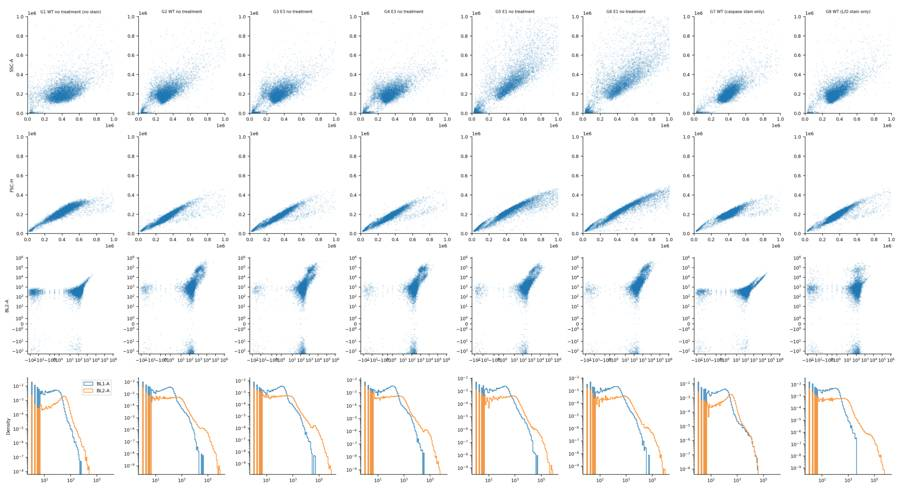
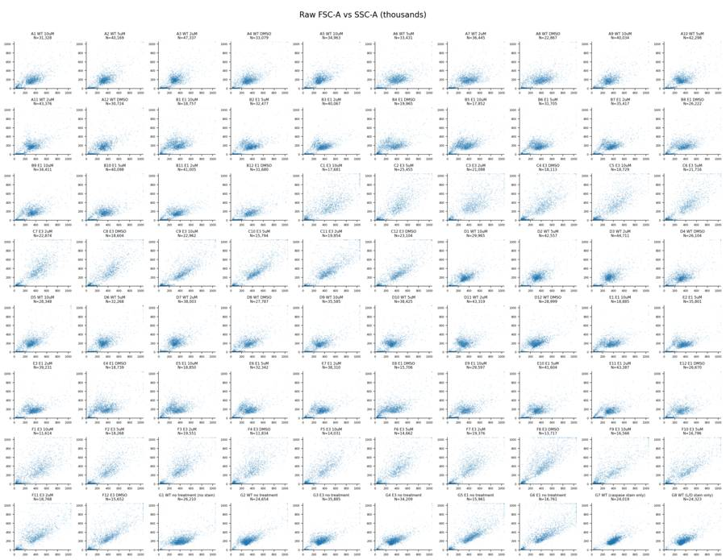
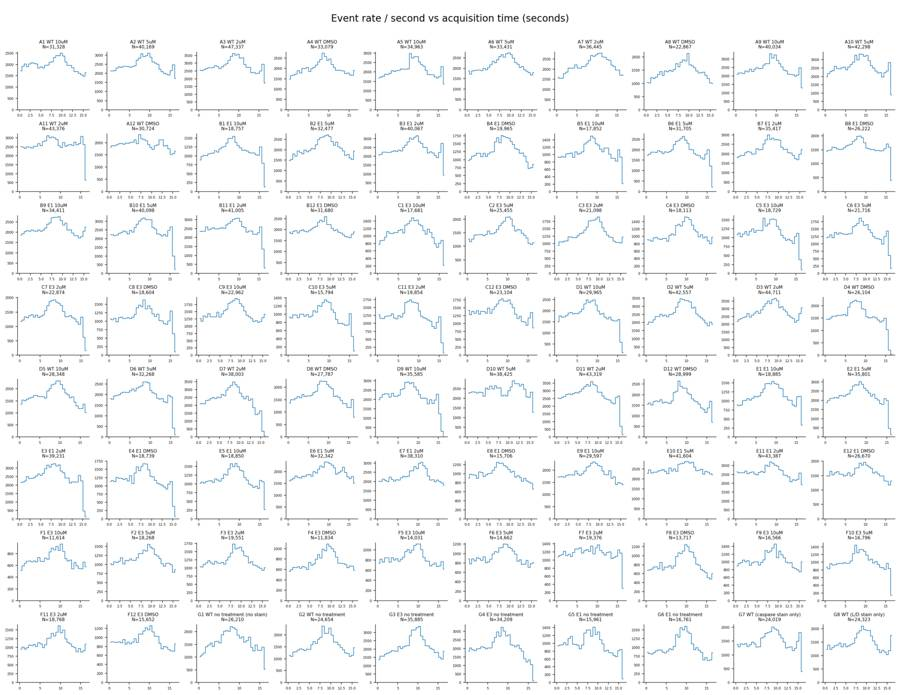
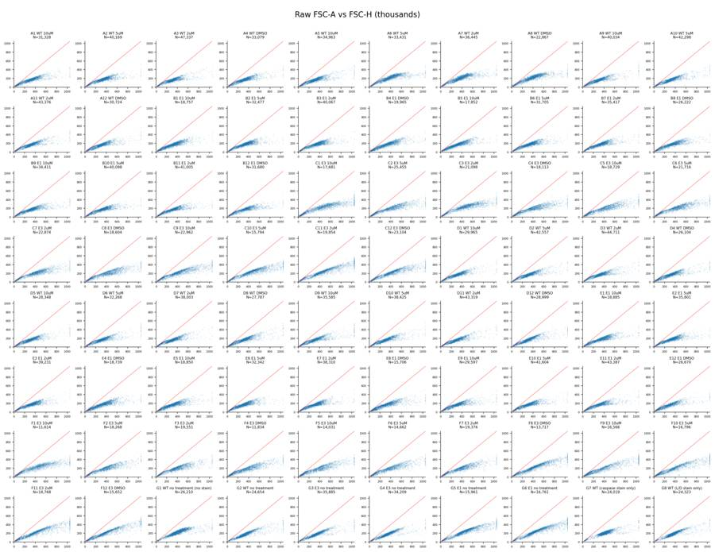
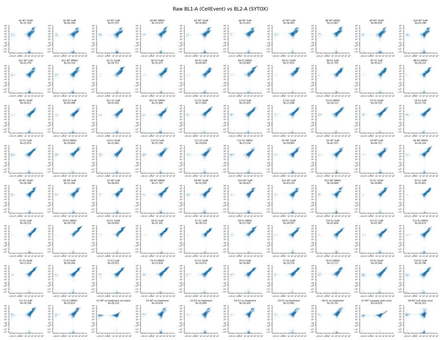
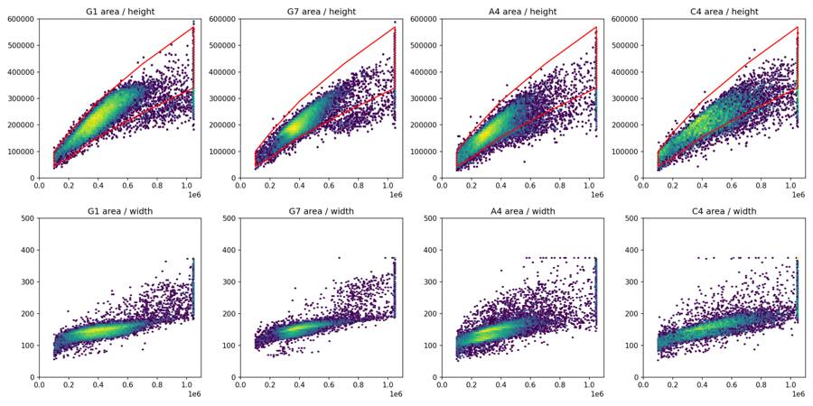
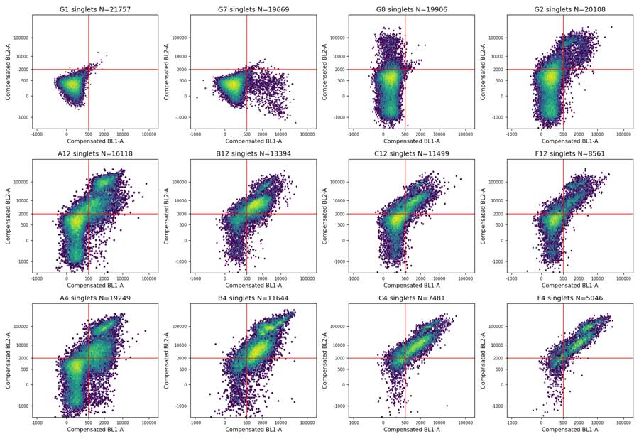
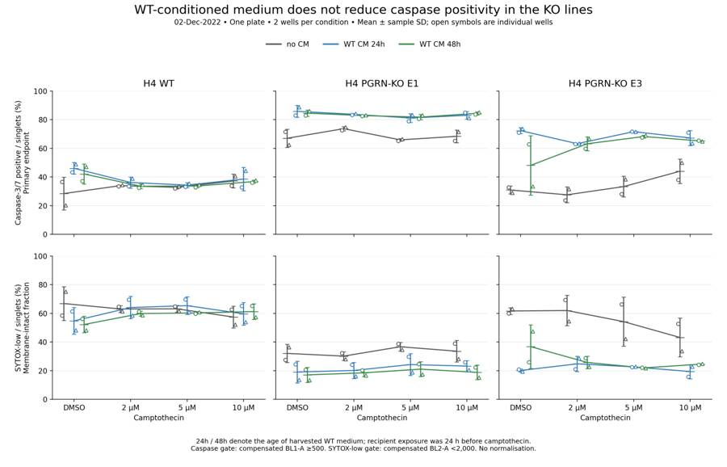
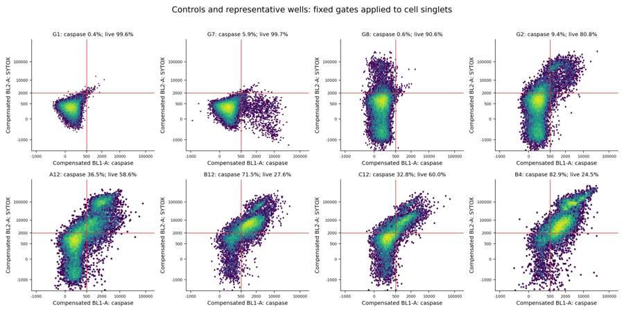

B3_flowkit · GPT-6 Astra · attempt CHpxki5
Batch fk1 · job fk1_B_EXP22004363_run1_221202_flowkit_gpt-6-astra · trial B_EXP22004363_run1_221202_flowki__CHpxki5. Long tool outputs are cut at 6,000 characters.
Score
0.44
0.44
Minutes
19.2
19.2
Agent cost
$5.82
$5.82
Steps
26
26
Screenshots / images
9
9
1
task prompt (instruction.md)
<environment_context> <cwd>/task</cwd> <shell>bash</shell> <current_date>2026-11-10</current_date> <timezone>Etc/UTC</timezone> <filesystem><workspace_roots><root>/task</root></workspace_roots><permission_profile type="disabled"><file_system type="unrestricted" /></permission_profile></filesystem> </environment_context>
2
user message
# Caspase-3/7 conditioned-media plate (H4 WT / PGRN-KO): analyse, conclude, recommend
## Goal
You are the analyst for this experiment. Analyse the 80-well plate acquired on 02-Dec-2022, answer the plan's question, and recommend the next step. The plan's question is whether WT progranulin-conditioned media can bring caspase activity in H4 PGRN-KO lines (E1, E3) back toward WT levels.
## Inputs (read-only, `/task/inputs/`)
| Path | Content |
|---|---|
| `/task/inputs/plan.md` | Notebook entry up to flow acquisition: purpose, rationale, materials, protocol, cytometer settings, plate maps and their highlight colours. |
| `/task/inputs/plate_layout.csv` | One row per FCS file: `file, well, sample, cell_line, camptothecin, conditioned_media`. `sample` is the 2022-12-02 plate-map label as written. `conditioned_media` is transcribed from that map's highlight colours (blue = WT 24hr, green = WT 48hr, none = no conditioned media). `camptothecin` is `not stated` where the plate map gives no treatment. |
| `/task/inputs/raw/` | 80 FCS 3.1 files (Attune NxT), `Caspase-assay-2-mlk_caspase_Group_<well>.fcs`, wells A1-F12 and G1-G8. |
## Channels
- FlowKit lists channels by the labels stored inside the FCS files, not by detector ID.
- These labels may be out of date.
- Use the plan's reagent list and cytometer settings to decide what each detector measured.
## Tools and rules
- **Save the gates.** Save the gating strategy as `/task/outputs/gates.xml` (see *Software*). Its gates must be the ones that produced `counts.csv`.
- **Output location.** Write every deliverable to `/task/outputs/`. Do not modify `/task/inputs/`.
- **Time budget.** About 5 hours.
## Deliverables (`/task/outputs/`)
### `gates.xml`
- Your gating strategy as GatingML 2.0, written with `flowkit.export_gatingml` (see *Software*). It must load with `flowkit.parse_gating_xml("/task/outputs/gates.xml")`.
### `counts.csv`
- **Columns, in order:** `file, well, population, role, parent, count, pct_of_parent`.
- **Rows:** one row per file per population, for all 80 files, with the same set of populations for every file.
- **`all_events` row:** one per file, with `population` = `all_events`, `role` = `other`, `parent` = `none` and `pct_of_parent` empty.
- **`role`** must be one of `cells`, `singlets`, `live`, `marker_positive`, `other`. Each of `cells`, `singlets`, `live` and `marker_positive` is used by exactly one population, and that population is the same in every file. `marker_positive` is the assay read-out population. `other` may be used by any number of populations.
- **`parent`** is the name of the parent population; use `all_events` for a top-level gate.
- **`count`** is an integer event count taken from FlowKit statistics on the saved gates.
- **`pct_of_parent`** = 100 x count / parent count.
### `flags.csv`
- **Columns, in order:** `file, well, issue_type, evidence, decision`.
- **Rows:** exactly one row per FCS file (80 rows). If a well has several issues, report the main one and mention the others in `evidence`.
- **`issue_type`** must be one of `none`, `clog`, `ran_dry`, `too_few_events`, `saturation`, `bad_control`, `mislabel`, `other`.
- **`decision`** must be one of `keep`, `keep_with_note`, `exclude`. Rows with `issue_type` = `none` must have `decision` = `keep`.
- **`evidence`** is required whenever `issue_type` is not `none`, and must cite at least one number from the data. It may be empty when `issue_type` = `none`.
### `condition_summary.csv`
- **Columns, in order:** `condition, wells, n_wells_used, mean, sd, metric_definition, normalisation_applied`.
- **`condition`** is a name you choose.
- **`wells`** lists the plate wells used, separated by `;`, e.g. `A1;D1`.
- **`n_wells_used`** is an integer.
- **`mean`** and **`sd`** are computed across the wells used. Leave `sd` empty when n = 1.
- **`metric_definition`** states the per-well metric, including numerator and denominator populations and units.
- **`normalisation_applied`** describes any normalisation, or says `none`.
### `figure.png`
The main result chart.
### `report.md`
Use these headings, in this order: `## Question`, `## Methods`, `## Results`, `## Conclusion`, `## Caveats`, `## Recommendation`.
### `answer.json`
```
{"question": str,
"comparisons": [{"comparison": str, "a": <condition>, "b": <condition>,
"direction": "increase"|"decrease"|"no_clear_change",
"magnitude": str, "confidence": "high"|"medium"|"low"}],
"overall_answer": "yes: ..." | "partial: ..." | "no: ...",
"assay_verdict": "fit_for_purpose"|"needs_optimisation"|"not_fit_for_purpose",
"next_action": <ACTION>,
"next_change": {"what": str, "from": str, "to": str, "why": str},
"excluded_wells": [well, ...],
"caveats": [str, ...]}
```
- **`comparisons`:** at least one. `a` and `b` must be `condition` values that appear in `condition_summary.csv`.
- **`direction`** describes `b` relative to `a`: `increase` means b > a.
- **`magnitude`:** give the size of the difference with a number and its unit.
- **`overall_answer`** must start with `yes:`, `partial:` or `no:`.
- **`next_action`** must be one of `proceed_as_planned`, `repeat_unchanged`, `repeat_with_change`, `optimise_reagent_or_setting`, `change_treatment_or_timing`, `switch_assay`, `stop`.
- `next_change`: the change you recommend, as an object: `what` (the step, reagent or condition to change), `from` (its value as run), `to` (the value you recommend) and `why`. Use empty strings if you recommend no change.
- **`excluded_wells`** must equal the set of wells with `decision` = `exclude` in `flags.csv`.
## Software (FlowKit version of this task)
- **Python 3 with FlowKit 1.2.3** (plus flowio, numpy, pandas, scipy, matplotlib, openpyxl) is installed. There is no graphical analysis program.
- **Load** each file with `flowkit.Sample(path)`. Build **one** `flowkit.GatingStrategy` for all wells, with `flowkit.Dimension` and `flowkit.gates.RectangleGate`, `PolygonGate` or `EllipsoidGate` (no quadrant or Boolean gates).
- **Gate names** must be valid XML IDs: letters, digits and underscores, starting with a letter (no spaces or `+`).
- **One gate per reported population**, named exactly as the population and nested under its parent population (the first population's gate sits at the root). A population's events are its own gate within its parent.
- **Compensation.** Your choice. Every gate dimension must state its `compensation_ref` (`"uncompensated"`, `"FCS"` for the file's own spillover matrix, or the id of a matrix you add to the strategy).
- **Channels.** FlowKit gate dimensions use the detector ID (`$PnN`, e.g. `BL1-A`), not the text label.
- **Transforms.** You may draw gates on transformed axes (for example `flowkit.transforms.LogicleTransform`, added with `add_transform` and referenced by `transformation_ref`).
- **Save** the strategy with `flowkit.export_gatingml(strategy, open("/task/outputs/gates.xml", "wb"))` and check that it reloads with `flowkit.parse_gating_xml`.
- **Counts.** `counts.csv` must be the counts these saved gates give on each file (`strategy.gate_sample(sample)`), with no per-well changes.
- **Looking at data.** Save plots as PNG files and open the image files to view them.
---
## How you work
You work in a **terminal** (bash, working directory `/task`).
- **Inputs** are in `/task/inputs/` (read-only). **Write every deliverable to `/task/outputs/`.** Only that folder is collected for grading.
- **Limits.** There is no limit on the number of actions; the only limit is the time budget above. Save `gates.xml` and your output files early and often.
3
agent
I’ll check the notebook and detector settings, inspect the event data, then apply one saved gating strategy across all 80 wells. I’ll separate evidence for conditioned-media rescue from any limits in the controls or assay performance.
tool call · exec
const results = await Promise.allSettled([
tools.exec_command({cmd:"pwd && rg --files -g 'AGENTS.md' -g '!inputs/raw/**' -g '!outputs/**' /task /installed-agent 2>/dev/null","max_output_tokens":3000}),
tools.exec_command({cmd:"ls -la /task/inputs && cat /task/inputs/plan.md && head -30 /task/inputs/plate_layout.csv","max_output_tokens":12000})
]); for (let i=0;i<results.length;i++) text({i,...results[i]});
text(ALL_TOOLS.filter(x=>/search|browse|python|file/.test(x.name+" "+x.description)).map(x=>({name:x.name,description:x.description.slice(0,160)})).slice(0,120));
tool output
Script completed
Wall time 0.1 seconds
Output:
{"i":0,"status":"fulfilled","value":{"chunk_id":"7b916e","wall_time_seconds":0.00000403,"exit_code":1,"original_token_count":2,"output":"/task\n"}}
{"i":1,"status":"fulfilled","value":{"chunk_id":"dcc849","wall_time_seconds":0.0000041,"exit_code":0,"original_token_count":2323,"output":"total 28\ndr-xr-xr-x 3 root root 4096 Nov 10 16:58 .\ndrwxr-xr-x 4 root root 4096 Nov 10 16:59 ..\n-r--r--r-- 1 root root 6547 Nov 10 16:58 plan.md\n-r--r--r-- 1 root root 6889 Nov 10 16:58 plate_layout.csv\ndr-xr-xr-x 2 root root 4096 Nov 10 16:58 raw\n# EXP22004363 | 2022.11.28 Caspase Activity Assay Dev: Progranulin Conditioned Media\n\nThis is the notebook entry text up to flow acquisition on 2022-12-02. People's names have been removed.\n\n- **Tags:** Target PGRN; Technology Assay development; Model System Cell based; Methodology Flow; Cell Type H4.\n- **Plate maps:** shown below as grids (rows A-H, columns 1-12). Empty cells are blank.\n- **Highlight colours:** the notebook encodes conditioned-media treatment by highlight colour. The colours are listed at the end.\n\n## DAY 2022-11-28\n\n### Purpose\nTo determine if progranulin conditioned media can restore wild-type levels of caspase activity in H4 GRN KO cells.\n\n### Rationale\nPrevious literature evidence suggests that applying exogenous progranulin to cells can restore molecular phenotypes in progranulin deficient lines. Our previous experiment with caspase activity on H4 GRN WT and KO cells showed that GRN KO lines had increased caspase activity. This difference was enhanced after campothesin challenge in both GRN WT and KO cells ( ). In this experiment, we will determine if applying conditioned media from WT cell lines onto KO lines can reduce caspase activity closer to WT levels.\n\n### Materials\n- H4 WT cells\n- H4 PGRN KO E1\n- H4 PGRN KO E3\n- H4 media (DMEM + 10% FBS)\n- CellEvent Caspase-3/7 Green Flow Cytometry Assay Kit\n- Camptothecin\n- Plate 10k cells according to plate:\n\n| | 1 | 2 | 3 | 4 | 5 | 6 | 7 | 8 | 9 | 10 | 11 | 12 |\n|---|---|---|---|---|---|---|---|---|---|---|---|---|\n| A | WT | WT | WT | WT | WT | WT | WT | WT | WT | | | |\n| B | WT | WT | WT | WT | WT | WT | WT | WT | WT | | | |\n| C | WT | WT | WT | WT | WT | WT | WT | WT | WT | | | |\n| D | WT | WT | WT | WT | WT | WT | WT | WT | WT | | | |\n| E | E1 | E1 | E1 | E1 | E1 | E1 | E1 | E1 | E1 | | | |\n| F | E3 | E3 | E3 | E3 | E3 | E3 | E3 | E3 | E3 | | | |\n| G | | | | | | | | | Serum free media | | | |\n| H | 24 hr | | | | 48 hr | | | | | | | |\n\n- WT-330K for 33 wells-resuspend in 3300mL\n- E1 and E3-90K for 9 wells-resuspend in 900uL\n\n## DAY 2022-11-29\n- Harvest media after 24 and 48 hrs and place in 4 C until ready to use.\n\n## DAY 2022-11-30\n- Plate cells according to the following plate map and incubate at 37C:\n\n| | 1 | 2 | 3 | 4 | 5 | 6 | 7 | 8 | 9 | 10 | 11 | 12 |\n|---|---|---|---|---|---|---|---|---|---|---|---|---|\n| A | WT | WT | WT | WT | WT | WT | WT | WT | WT | WT | WT | WT |\n| B | E1 | E1 | E1 | E1 | E1 | E1 | E1 | E1 | E1 | E1 | E1 | E1 |\n| C | E3 | E3 | E3 | E3 | E3 | E3 | E3 | E3 | E3 | E3 | E3 | E3 |\n| D | WT | WT | WT | WT | WT | WT | WT | WT | WT | WT | WT | WT |\n| E | E1 | E1 | E1 | E1 | E1 | E1 | E1 | E1 | E1 | E1 | E1 | E1 |\n| F | E3 | E3 | E3 | E3 | E3 | E3 | E3 | E3 | E3 | E3 | E3 | E3 |\n| G | WT no treatment | WT no treatment | E3 no treatment | E3 no treatment | | | | | | | | |\n| H | E1 no treatment | E1 no treatment | WT (flow control) | WT (flow control) | | | | | | | | |\n\n## DAY 2022-12-01\n- Gently wash cells with DMEM.\n- Replace media with conditioned media collected previously. Conditioned media added at 9AM\n\n## DAY 2022-12-02\n- After 24 hours, add campthothesin according to the plate map:\n\n| | 1 | 2 | 3 | 4 | 5 | 6 | 7 | 8 | 9 | 10 | 11 | 12 |\n|---|---|---|---|---|---|---|---|---|---|---|---|---|\n| A | WT 10uM | WT 5uM | WT 2uM | WT DMSO | WT 10uM | WT 5uM | WT 2uM | WT DMSO | WT 10uM | WT 5uM | WT 2uM | WT DMSO |\n| B | E1 10uM | E1 5uM | E1 2uM | E1 DMSO | E1 10uM | E1 5uM | E1 2uM | E1 DMSO | E1 10uM | E1 5uM | E1 2uM | E1 DMSO |\n| C | E3 10uM | E3 5uM | E3 2uM | E3 DMSO | E3 10uM | E3 5uM | E3 2uM | E3 DMSO | E3 10uM | E3 5uM | E3 2uM | E3 DMSO |\n| D | WT 10uM | WT 5uM | WT 2uM | WT DMSO | WT 10uM | WT 5uM | WT 2uM | WT DMSO | WT 10uM | WT 5uM | WT 2uM | WT DMSO |\n| E | E1 10uM | E1 5uM | E1 2uM | E1 DMSO | E1 10uM | E1 5uM | E1 2uM | E1 DMSO | E1 10uM | E1 5uM | E1 2uM | E1 DMSO |\n| F | E3 10uM | E3 5uM | E3 2uM | E3 DMSO | E3 10uM | E3 5uM | E3 2uM | E3 DMSO | E3 10uM | E3 5uM | E3 2uM | E3 DMSO |\n| G | WT no treatment (no stain) | WT no treatment | E3 no treatment | E3 no treatment | E1 no treatment | E1 no treatment | WT (caspase stain only) | WT (L/D stain only) | | | | |\n| H | | | | | | | | | | | | |\n\n- Blue highlight=treated with WT 24hr conditoned media\n- Green highlight= treated with WT 48hr conditioned media\n- No highlight= no conditioned media treatment\n- Incubate and run flow.\n- Aspirate media and wash with PBS\n- Add 150uL trypsin incubate for 5min\n- Add 75uL FBS and collect into 96w round bottom plate\n- spin down 200xg for 5min\n- Add 200uL of Cell Event Caspase 3/7 Detection reagent (1:1000) in flow staining buffer. Incubate for 30min at 37C\n- Prepare SYTOX AAdvanced Dead Cell Stain at 100uM concentration by adding 1000uL DMSO to stain. Mix well\n- During the final 5 minutes of 30min Caspase incubation add 2uL of the 100uM Dead Cell stain (final concentration of 1uM)\n- Analyze the samples without fixing.\n\nFlow cytometer settings: FSC-20; SSC-290; BL1 (caspase)-225, BL2 (AAddvanced Dead Cell Stain)-350\n\n## Plate-map cell colours (from the notebook's highlighting; the plain-text maps above drop colour)\n\n### Plate map of 2022-11-28\n- row A: WT [light cyan #C2EDF8] x8 (cols 1-8) | WT (col 9, no highlight) | - | - | -\n- row B: WT [light cyan #C2EDF8] x8 (cols 1-8) | WT (col 9, no highlight) | - | - | -\n- row C: WT [lig
… [4,813 more characters not shown]tool call · exec
const results = await Promise.allSettled([
tools.exec_command({cmd:"ls -la /task && for p in /AGENTS.md /task/AGENTS.md; do if [ -f \"$p\" ]; then cat \"$p\"; fi; done && python - <<'PY'\nimport flowkit as fk, inspect, importlib.metadata as im\nfrom pathlib import Path\nprint('FlowKit:', im.version('flowkit'))\nprint('Files:', len(list(Path('/task/inputs/raw').glob('*.fcs'))))\ns=fk.Sample('/task/inputs/raw/Caspase-assay-2-mlk_caspase_Group_G1.fcs')\nprint(s.channels.to_string())\nprint('metadata', s.get_metadata())\nprint('events', s.event_count, s.get_events(source='raw').shape)\nprint('Stats API', inspect.signature(fk.GatingStrategy.gate_sample), inspect.signature(fk.Dimension), inspect.signature(fk.gates.PolygonGate), inspect.signature(fk.transforms.LogicleTransform))\nPY","max_output_tokens":6500}),
tools.web__run({search_query:[{q:'site.thermofisher.com CellEvent Caspase-3/7 Green Flow Cytometry Assay Kit SYTOX AADvanced BL1 BL2 0.5 uM 1 uM protocol'}],response_length:"long"})
]); results.forEach((r,i)=>text({i,...r}));
tool output
Script completed
Wall time 1.4 seconds
Output:
{"i":0,"status":"fulfilled","value":{"chunk_id":"7679b2","wall_time_seconds":1.216896944,"exit_code":0,"original_token_count":1290,"output":"total 16\ndrwxr-xr-x 4 root root 4096 Nov 10 16:59 .\ndrwxr-xr-x 21 root root 4096 Nov 10 17:07 ..\ndr-xr-xr-x 3 root root 4096 Nov 10 16:58 inputs\ndrwxr-xr-x 2 root root 4096 Nov 10 16:59 outputs\nFlowKit: 1.2.3\nFiles: 80\n channel_number pnn pns png pne pnr\n0 1 Time Time 1.0 (0.0, 0.0) 67108864.0\n1 2 FSC-A FSC-A 1.0 (0.0, 0.0) 1048576.0\n2 3 SSC-A SSC-A 1.0 (0.0, 0.0) 1048576.0\n3 4 BL1-A AAV-GFP-GFP-A 1.0 (0.0, 0.0) 1048576.0\n4 5 BL2-A AAdvanced livedead-A 1.0 (0.0, 0.0) 1048576.0\n5 6 FSC-H FSC-H 1.0 (0.0, 0.0) 1048576.0\n6 7 SSC-H SSC-H 1.0 (0.0, 0.0) 1048576.0\n7 8 BL1-H AAV-GFP-GFP-H 1.0 (0.0, 0.0) 1048576.0\n8 9 BL2-H AAdvanced livedead-H 1.0 (0.0, 0.0) 1048576.0\n9 10 FSC-W FSC-W 1.0 (0.0, 0.0) 1024.0\n10 11 SSC-W SSC-W 1.0 (0.0, 0.0) 1024.0\n11 12 BL1-W AAV-GFP-GFP-W 1.0 (0.0, 0.0) 1024.0\n12 13 BL2-W AAdvanced livedead-W 1.0 (0.0, 0.0) 1024.0\nmetadata {'par': '13', 'tot': '26210', 'mode': 'L', 'datatype': 'F', 'byteord': '1,2,3,4', 'p1f': 'NA', 'p1l': 'NA', 'p1s': 'Time', 'p1v': 'NA', 'p1n': 'Time', 'p1b': '32', 'p1r': '67108864', 'p1e': '0,0', 'p2f': 'NA', 'p2l': '488', 'p2s': 'FSC-A', 'p2v': '20', 'p2n': 'FSC-A', 'p2b': '32', 'p2r': '1048576', 'p2e': '0,0', 'p3f': 'NA', 'p3l': '488', 'p3s': 'SSC-A', 'p3v': '290', 'p3n': 'SSC-A', 'p3b': '32', 'p3r': '1048576', 'p3e': '0,0', 'p4f': 'NA', 'p4l': '488', 'p4s': 'AAV-GFP-GFP-A', 'p4v': '225', 'p4n': 'BL1-A', 'p4b': '32', 'p4r': '1048576', 'p4e': '0,0', 'p5f': 'NA', 'p5l': '488', 'p5s': 'AAdvanced livedead-A', 'p5v': '350', 'p5n': 'BL2-A', 'p5b': '32', 'p5r': '1048576', 'p5e': '0,0', 'p6f': 'NA', 'p6l': '488', 'p6s': 'FSC-H', 'p6v': '20', 'p6n': 'FSC-H', 'p6b': '32', 'p6r': '1048576', 'p6e': '0,0', 'p7f': 'NA', 'p7l': '488', 'p7s': 'SSC-H', 'p7v': '290', 'p7n': 'SSC-H', 'p7b': '32', 'p7r': '1048576', 'p7e': '0,0', 'p8f': 'NA', 'p8l': '488', 'p8s': 'AAV-GFP-GFP-H', 'p8v': '225', 'p8n': 'BL1-H', 'p8b': '32', 'p8r': '1048576', 'p8e': '0,0', 'p9f': 'NA', 'p9l': '488', 'p9s': 'AAdvanced livedead-H', 'p9v': '350', 'p9n': 'BL2-H', 'p9b': '32', 'p9r': '1048576', 'p9e': '0,0', 'p10f': 'NA', 'p10l': '488', 'p10s': 'FSC-W', 'p10v': '20', 'p10n': 'FSC-W', 'p10b': '32', 'p10r': '1024', 'p10e': '0,0', 'p11f': 'NA', 'p11l': '488', 'p11s': 'SSC-W', 'p11v': '290', 'p11n': 'SSC-W', 'p11b': '32', 'p11r': '1024', 'p11e': '0,0', 'p12f': 'NA', 'p12l': '488', 'p12s': 'AAV-GFP-GFP-W', 'p12v': '225', 'p12n': 'BL1-W', 'p12b': '32', 'p12r': '1024', 'p12e': '0,0', 'p13f': 'NA', 'p13l': '488', 'p13s': 'AAdvanced livedead-W', 'p13v': '350', 'p13n': 'BL2-W', 'p13b': '32', 'p13r': '1024', 'p13e': '0,0', 'cyt': '0A29009 Attune NxT Acoustic Focusing Cytometer (Lasers: BRV6Y)', 'sys': 'SEA11065ATTUNE Microsoft Windows 10 Enterprise LTSC', 'spillover': '6,BL1-A,BL2-A,BL1-H,BL2-H,BL1-W,BL2-W,1.000000,0.000000,0.000000,0.000000,0.000000,0.000000,0.000000,1.000000,0.000000,0.000000,0.000000,0.000000,0.000000,0.000000,1.000000,0.000000,0.000000,0.000000,0.000000,0.000000,0.000000,1.000000,0.000000,0.000000,0.000000,0.000000,0.000000,0.000000,1.000000,0.000000,0.000000,0.000000,0.000000,0.000000,0.000000,1.000000', 'btim': '15:26:08', 'cells': 'NA', 'com': 'NA', 'cytsn': '2AFC228071019', 'date': '02-Dec-2022', 'etim': '15:26:25', 'exp': 'NA', 'fil': 'G1.fcs', 'inst': 'NA', 'originality': 'Original', 'lost': '0', 'op': 'Jeff Huang', 'plateid': 'NA', 'platename': 'Caspase-assay-2-mlk', 'proj': 'caspase', 'smno': 'Group', 'src': 'NA', 'timestep': '0.001', 'vol': '140000', 'wellid': 'G1', '#coincidentcount': '435', '#flowrate': '500', '#laser1asf': '1.05', '#laser1color': 'Blue', '#laser1delay': '1100', '#laser2asf': '1.09', '#laser2color': 'Red', '#laser2delay': '1514', '#laser3asf': '1.02', '#laser3color': 'Violet', '#laser3delay': '702', '#laser4asf': '0.98', '#laser4color': 'Yellow', '#laser4delay': '275', '#laserconfig': 'BRV6Y', '#p12label': 'GFP', '#p12target': 'AAV-GFP', '#p13target': 'AAdvanced livedead', '#p1label': 'NA', '#p1target': 'NA', '#p4label': 'GFP', '#p4target': 'AAV-GFP', '#p5target': 'AAdvanced livedead', '#p8label': 'GFP', '#p8target': 'AAV-GFP', '#p9target': 'AAdvanced livedead', '#ptdate': '02-Dec-2022', '#ptresult': 'Pass', '#tr1': 'OR_FSC,25000', '#widththreshold': '1000', '#winext': '0', 'hostid': 'SEA11065ATTUNE', 'begindata': '000000008192', 'enddata': '000001371111', 'nextdata': '000000000000', 'beginstext': '000000000000', 'endstext': '000000000000', 'beginanalysis': '000000000000', 'endanalysis': '000000000000'}\nevents 26210 (26210, 13)\nStats API (self, sample, cache_events=False, verbose=False) (dimension_id, compensation_ref='uncompensated', transformation_ref=None, range_min=None, range_max=None) (gate_name, dimensions, vertices, use_complement=False) (param_t, param_w, param_m, param_a)\n"}}
{"i":1,"status":"fulfilled","value":"USER GUIDE\nCellEvent™ Caspase-3/7 Green Flow Cytom (https://www.thermofisher.com/TFS-Assets/LSG/manuals/cellevent_caspase_3_7_grn_flow_cytometry_assay_kit_man.pdf)\nciteturn0search12 [wordlim: 200] Published: 8 months ago; During the final 5 minutes of staining, add 1 µL of the 1 mM SYTOX ... Product CellEvent™ Caspase-3/7 Green Flow Cytometry Assay Kit | Cat. ... Product CellEvent™ Caspase-3/7 Green Flow Cytometry Assay Kit | Cat.\n1.1.\n(Optional) Induce apoptosis in cells using the desired method. Prepare a negative control by\nincubating cells in the absence of apoptosis ind
… [28,393 more characters not shown]tool call · exec
text(await tools.apply_patch("*** Begin Patch\n*** Add File: /task/outputs/inspect_data.py\n+\"\"\"Read-only input inspection; all results are written under outputs/.\"\"\"\n+from pathlib import Path\n+import json\n+import numpy as np\n+import pandas as pd\n+import matplotlib\n+matplotlib.use('Agg')\n+import matplotlib.pyplot as plt\n+import flowkit as fk\n+\n+OUT = Path('/task/outputs')\n+ROOT = Path('/task/inputs')\n+layout = pd.read_csv(ROOT / 'plate_layout.csv')\n+rng = np.random.default_rng(22004363)\n+samples = {}\n+rows = []\n+for row in layout.itertuples(index=False):\n+ s = fk.Sample(str(ROOT / 'raw' / row.file))\n+ e = s.get_events(source='raw')\n+ meta = s.get_metadata()\n+ cols = s.channels.pnn.tolist()\n+ samples[row.well] = (e, cols)\n+ r = dict(file=row.file, well=row.well, total=len(e),\n+ btim=meta['btim'], etim=meta['etim'], time_min=e[:,0].min(),\n+ time_max=e[:,0].max(), coincident=int(meta.get('#coincidentcount', 0)),\n+ lost=int(meta.get('lost', 0)), flowrate=meta.get('#flowrate'),\n+ spillover=meta.get('spillover'), wellid=meta.get('wellid'),\n+ voltages=';'.join(f'{c}:{meta.get(\"p\"+str(i+1)+\"v\")}' for i,c in enumerate(cols)),\n+ date=meta.get('date'), volume=meta.get('vol'))\n+ for c in ['FSC-A', 'SSC-A', 'FSC-H', 'FSC-W', 'BL1-A', 'BL2-A']:\n+ j = cols.index(c)\n+ v = e[:,j]\n+ for p, value in zip([0,1,5,25,50,75,95,99,99.9,100], np.percentile(v,[0,1,5,25,50,75,95,99,99.9,100])):\n+ r[f'{c}_p{p}'] = value\n+ r[f'{c}_pct_ge_range'] = 100*np.mean(v >= float(s.channels.iloc[j].pnr)*0.999)\n+ hist, _ = np.histogram(e[:,0], bins=20)\n+ r['time_bin_min'] = hist.min()\n+ r['time_bin_median'] = np.median(hist)\n+ r['time_bin_max'] = hist.max()\n+ r['max_interevent_gap_s'] = np.diff(e[:,0]).max() if len(e)>1 else np.nan\n+ r['time_nonmonotonic'] = int(np.sum(np.diff(e[:,0])<0))\n+ rows.append(r)\n+pd.DataFrame(rows).to_csv(OUT/'raw_qc.csv', index=False)\n+with open(OUT/'fcs_channel_metadata.json','w') as f:\n+ json.dump({'channels':s.channels.to_dict(orient='records'),\n+ 'example_metadata': {k:v for k,v in meta.items() if k not in ['op','hostid']}},f,indent=2)\n+\n+plt.rcParams.update({'font.size':8, 'axes.spines.top':False, 'axes.spines.right':False})\n+for kind in ['scatter','singlets','fluorescence','time']:\n+ fig, axes = plt.subplots(8,10,figsize=(22,17))\n+ for ax, row in zip(axes.flat, layout.itertuples(index=False)):\n+ e, cols = samples[row.well]\n+ q=e[rng.choice(len(e),min(2500,len(e)),replace=False)]\n+ if kind=='scatter':\n+ ax.scatter(q[:,1]/1e3,q[:,2]/1e3,s=.6,alpha=.15,rasterized=True)\n+ ax.set(xlim=(0,1050),ylim=(0,1050))\n+ elif kind=='singlets':\n+ ax.scatter(q[:,1]/1e3,q[:,5]/1e3,s=.6,alpha=.15,rasterized=True)\n+ ax.plot([0,1050],[0,1050],lw=.5,c='r')\n+ ax.set(xlim=(0,1050),ylim=(0,1050))\n+ elif kind=='fluorescence':\n+ ax.scatter(q[:,3],q[:,4],s=.6,alpha=.15,rasterized=True)\n+ ax.set(xscale='symlog',yscale='symlog',xlim=(-300,1.2e6),ylim=(-300,1.2e6))\n+ else:\n+ bins=np.linspace(e[:,0].min(),e[:,0].max(),31)\n+ h,b=np.histogram(e[:,0],bins)\n+ ax.step((b[:-1]+b[1:])/2,h/np.diff(b),where='mid',lw=1)\n+ ax.set(ylim=(0,None))\n+ ax.set_title(f'{row.well} {row.sample}\\nN={len(e):,}', fontsize=8)\n+ ax.tick_params(labelsize=6)\n+ titles={'scatter':'Raw FSC-A vs SSC-A (thousands)', 'singlets':'Raw FSC-A vs FSC-H (thousands)',\n+ 'fluorescence':'Raw BL1-A (CellEvent) vs BL2-A (SYTOX)', 'time':'Event rate / second vs acquisition time (seconds)'}\n+ fig.suptitle(titles[kind],fontsize=17)\n+ fig.tight_layout(rect=(0,0,1,.97))\n+ fig.savefig(OUT/f'qc_{kind}_all.png',dpi=140)\n+ plt.close(fig)\n+\n+fig, axes = plt.subplots(4,8,figsize=(22,12))\n+for col in range(8):\n+ well=f'G{col+1}'\n+ e,_=samples[well]\n+ q=e[rng.choice(len(e),min(8000,len(e)),replace=False)]\n+ axes[0,col].scatter(q[:,1],q[:,2],s=1,alpha=.12)\n+ axes[0,col].set(xlim=(0,1e6),ylim=(0,1e6))\n+ axes[0,col].set_title(well+' '+layout.loc[layout.well.eq(well),'sample'].iloc[0],fontsize=7)\n+ axes[1,col].scatter(q[:,1],q[:,5],s=1,alpha=.12)\n+ axes[1,col].set(xlim=(0,1e6),ylim=(0,1e6))\n+ axes[2,col].scatter(q[:,3],q[:,4],s=1,alpha=.12)\n+ axes[2,col].set(xscale='symlog',yscale='symlog',xlim=(-200,1.2e6),ylim=(-200,1.2e6))\n+ bins=np.logspace(0,6,100)\n+ axes[3,col].hist(e[:,3],bins=bins,histtype='step',density=True,label='BL1-A')\n+ axes[3,col].hist(e[:,4],bins=bins,histtype='step',density=True,label='BL2-A')\n+ axes[3,col].set(xscale='log',yscale='log')\n+axes[3,0].legend()\n+for ax,label in zip(axes[:,0],['SSC-A','FSC-H','BL2-A','Density']): ax.set_ylabel(label)\n+fig.tight_layout()\n+fig.savefig(OUT/'qc_controls_raw.png',dpi=160)\n+print(pd.DataFrame(rows)[['well','total','time_max','BL1-A_p50','BL1-A_p99','BL2-A_p50','BL2-A_p99','time_bin_min','time_bin_median','max_interevent_gap_s']].to_string(index=False))\n*** End Patch"));
text(await tools.exec_command({cmd:"python /task/outputs/inspect_data.py","yield_time_ms":1000,"max_output_tokens":5000}));
tool output
Script completed
Wall time 1.2 seconds
Output:
{}
{"chunk_id":"377866","wall_time_seconds":1.00152432,"session_id":24194,"original_token_count":0,"output":""}6
agent
The files confirm that BL1-A is the caspase channel despite its stored “AAV-GFP” label; BL2-A was used for the dead-cell stain. The December 2 map also differs from the earlier setup map, so I’m using the supplied acquisition-day assignments and recording that discrepancy as a caveat.
tool call · exec
const results = await Promise.allSettled([
tools.exec_command({cmd:"python - <<'PY'\nimport flowkit as fk, inspect\nprint(inspect.signature(fk.GatingStrategy.add_gate))\nprint(inspect.signature(fk.gates.RectangleGate))\nfrom flowkit._models.gating_results import GatingResults\nprint(inspect.getsource(GatingResults))\nPY","max_output_tokens":7000}),
tools.web__run({search_query:[{q:'site.thermofisher.com Attune NxT BRV6Y BL2 574 26 BL3 690 50 SYTOX AADvanced'}],open:[{ref_id:'https://tools.thermofisher.com/content/sfs/manuals/cellevent_caspase_3_7_grn_flow_cytometry_assay_kit_man.pdf'}],response_length:"long"})
]);results.forEach((r,i)=>text({i,...r}));
tool output
Script completed
Wall time 0.8 seconds
Output:
{"i":0,"status":"fulfilled","value":{"chunk_id":"9a45a5","wall_time_seconds":0.589613796,"exit_code":0,"original_token_count":1614,"output":"(self, gate, gate_path, sample_id=None)\n(gate_name, dimensions, use_complement=False)\nclass GatingResults(object):\n \"\"\"\n A GatingResults instance is returned from the GatingStrategy `gate_samples` method\n as well as the Session `get_gating_results` method. End users will never create an\n instance of GatingResults directly, only via these GatingStrategy and Session\n methods. However, there are several GatingResults methods to retrieve the results.\n \"\"\"\n def __init__(self, results_dict, sample_id):\n self._raw_results = results_dict\n self._gate_lut = {}\n self.report = None\n self.sample_id = sample_id\n self._process_results()\n\n @staticmethod\n def _get_pd_result_dict(res_dict, gate_name):\n return {\n 'sample': res_dict['sample'],\n 'gate_path': res_dict['gate_path'],\n 'parent': res_dict['parent'],\n 'gate_name': gate_name,\n 'gate_type': res_dict['gate_type'],\n 'count': res_dict['count'],\n 'absolute_percent': res_dict['absolute_percent'],\n 'relative_percent': res_dict['relative_percent'],\n 'quadrant_parent': None\n }\n\n def _process_results(self):\n pd_list = []\n\n for (g_name, g_path), res in self._raw_results.items():\n if 'events' not in res:\n # it's a quad gate with sub-gates\n for sub_g_id, sub_res in res.items():\n pd_dict = self._get_pd_result_dict(sub_res, sub_g_id)\n pd_dict['quadrant_parent'] = g_name\n pd_list.append(pd_dict)\n if sub_g_id not in self._gate_lut:\n self._gate_lut[sub_g_id] = {\n 'paths': [g_path]\n }\n else:\n self._gate_lut[sub_g_id]['paths'].append(g_path)\n else:\n pd_list.append(self._get_pd_result_dict(res, g_name))\n if g_name not in self._gate_lut:\n self._gate_lut[g_name] = {\n 'paths': [g_path]\n }\n else:\n self._gate_lut[g_name]['paths'].append(g_path)\n\n df = pd.DataFrame(\n pd_list,\n columns=[\n 'sample',\n 'gate_path',\n 'gate_name',\n 'gate_type',\n 'quadrant_parent',\n 'parent',\n 'count',\n 'absolute_percent',\n 'relative_percent'\n ]\n )\n df['level'] = df.gate_path.map(lambda x: len(x) - 1)\n\n self.report = df.sort_values(['sample', 'level', 'gate_name'])\n\n def _filter_gate_report(self, gate_name, gate_path=None):\n results = self.report[(self.report['sample'] == self.sample_id) & (self.report['gate_name'] == gate_name)]\n\n if gate_path is not None:\n results = results[results.gate_path == gate_path]\n elif len(results) > 1:\n raise ValueError(\"Gate name %s is ambiguous, specify the full gate path\")\n\n return results\n\n def get_gate_membership(self, gate_name, gate_path=None):\n \"\"\"\n Retrieve a boolean array indicating gate membership for the events in the GatingResults sample.\n Note, the same gate ID may be found in multiple gate paths, i.e. the gate ID can be ambiguous.\n In this case, specify the full gate path to retrieve gate indices.\n\n :param gate_name: text string of a gate name\n :param gate_path: A tuple of ancestor gate IDs for the given gate ID. Alternatively, a string path delimited\n by forward slashes can also be given, e.g. ('/root/singlets/lymph/live')\n :return: NumPy boolean array (length of sample event count)\n \"\"\"\n gate_paths = self._gate_lut[gate_name]['paths']\n if len(gate_paths) > 1:\n if gate_path is None:\n raise ValueError(\"Gate name %s is ambiguous, specify the full gate path\")\n elif isinstance(gate_path, tuple):\n gate_path = \"/\".join(gate_path)\n else:\n gate_path = gate_paths[0]\n\n # need to check for quadrant gates, as they need to be handled differently\n gate_data = self.report[(self.report['sample'] == self.sample_id) & (self.report.gate_name == gate_name)]\n quad_parent_values = set(gate_data.quadrant_parent.to_list())\n\n if len(quad_parent_values) == 1 and None in quad_parent_values:\n # it's not a quadrant gate\n return self._raw_results[gate_name, gate_path]['events']\n elif len(quad_parent_values) == 1:\n quad_parent = quad_parent_values.pop()\n return self._raw_results[quad_parent, gate_path][gate_name]['events']\n else:\n raise ValueError(\"Report as bug: The gate %s appears to have multiple quadrant parents.\" % gate_name)\n\n def get_gate_count(self, gate_name, gate_path=None):\n \"\"\"\n Retrieve event count for the specified gate ID for the gating results sample\n\n :param gate_name: text string of a gate name\n :param gate_path: tuple of ancestor gate names\n :return: integer count of events in gate ID\n \"\"\"\n results = self._filter_gate_report(gate_name, gate_path=gate_path)\n\n return results['count'].values[0]\n\n def get_gate_absolute_percent(self, gate_name, gate_path=None):\n \"\"\"\n Retrieve percent of events, relative to the total sample events, of the specified gate ID for the\n gating results sample\n\n :param gate
… [23,265 more characters not shown]tool call · exec
text(await tools.write_stdin({session_id:24194,chars:"","yield_time_ms":1000,"max_output_tokens":6000}));
tool output
Script completed
Wall time 5.0 seconds
Output:
{"chunk_id":"28234f","wall_time_seconds":5.001168322,"session_id":24194,"original_token_count":0,"output":""}tool call · exec
const results=await Promise.allSettled([
tools.exec_command({cmd:"ls -lh /task/outputs && du -sh /task/inputs/raw && ps -eo pid,etime,pcpu,rss,args | head -20","max_output_tokens":2000}),
tools.web__run({open:[{ref_id:'https://www.thermofisher.com/TFS-Assets/LSG/manuals/cellevent_caspase_3_7_grn_flow_cytometry_assay_kit_man.pdf'}],response_length:"long"})
]);results.forEach((r,i)=>text({i,...r}));
tool output
Script completed
Wall time 0.5 seconds
Output:
{"i":0,"status":"fulfilled","value":{"chunk_id":"9acded","wall_time_seconds":0.00000375,"exit_code":0,"original_token_count":141,"output":"total 6.0M\n-rw-r--r-- 1 root root 6.5K Nov 10 17:09 fcs_channel_metadata.json\n-rw-r--r-- 1 root root 4.9K Nov 10 17:09 inspect_data.py\n-rw-r--r-- 1 root root 1016K Nov 10 17:09 qc_controls_raw.png\n-rw-r--r-- 1 root root 1.2M Nov 10 17:09 qc_fluorescence_all.png\n-rw-r--r-- 1 root root 1.9M Nov 10 17:09 qc_scatter_all.png\n-rw-r--r-- 1 root root 1.4M Nov 10 17:09 qc_singlets_all.png\n-rw-r--r-- 1 root root 479K Nov 10 17:09 qc_time_all.png\n-rw-r--r-- 1 root root 102K Nov 10 17:09 raw_qc.csv\n111M\t/task/inputs/raw\n/bin/bash: line 1: ps: command not found\n"}}
{"i":1,"status":"fulfilled","value":"CellEvent Caspase-3/7 Green Flow Cytometry Assay Kit User Guide (Pub.No. MAN0007522 B.0) (https://www.thermofisher.com/TFS-Assets/LSG/manuals/cellevent_caspase_3_7_grn_flow_cytometry_assay_kit_man.pdf)\nciteturn2view0 [wordlim: 200] Crawled: today; Content type: application/pdf; Number of pages: 4; Source: open({\"ref_id\":\"https://www.thermofisher.com/TFS-Assets/LSG/manuals/cellevent_caspase_3_7_grn_flow_cytometry_assay_kit_man.pdf\",\"lineno\":null}); Total lines: 150\nL0@P0: CellEvent™ Caspase-3/7 Green Flow Cytometry Assay Kit\nL1@P0: Catalog Numbers C10427, C10740\nL2@P0: Pub. No. MAN0007522 Rev. B.0\nL3@P0: WARNING! Read the Safety Data Sheets (SDSs) and follow the handling instructions. Wear appropriate protective eyewear,\nL4@P0: clothing, and gloves. Safety Data Sheets (SDSs) are available from thermofisher.com/support.\nL5@P0: Product description\nL6@P0: A distinctive feature of the early stages of apoptosis is the activation of caspase enzymes, which are cysteine-aspartic acid-specific\nL7@P0: proteases. These enzymes participate in a series of reactions triggered in response to pro-apoptotic signals and result in the cleavage of\nL8@P0: protein substrates and subsequent cell disassembly. The recognition sequence in the target substrate always includes an aspartic acid\nL9@P0: residue; cleavage takes place at the carbonyl end of that residue.\nL10@P0: CellEvent™ Caspase-3/7 Green Detection Reagent is a fluorogenic substrate for detection of activated caspases 3 and 7 in apoptotic\nL11@P0: cells. This cell-permeant reagent consists of a 4 amino acid peptide (DEVD) conjugated to a nucleic acid binding dye. During apoptosis,\nL12@P0: caspase-3 and caspase-7 proteins are activated and are able to cleave the caspase 3/7 recognition sequence encoded in the DEVD\nL13@P0: peptide. Cleavage of the recognition sequence and binding of DNA by the reagent labels apoptotic cells with a bright, fluorogenic signal.\nL14@P0: When used together with the SYTOX™ AADvanced™ Dead Cell Stain, apoptotic cells can easily be discriminated from live and necrotic\nL15@P0: cells (see Figure 1).\nL16@P0: Figure 1 Flow cytometry analysis with the CellEvent™ Caspase-3/7 Green Flow Cytometry Assay Kit.\nL17@P0: Jurkat cells (T-cell leukemia, human) were treated with (A) DMSO or (B) 10 µM camptothecin for 3 hours before labeling with the CellEvent™\nL18@P0: Caspase-3/7 Green Flow Cytometry Assay Kit. Stained samples were analyzed on the Attune™ Acoustic Focusing Cytometer equipped with a\nL19@P0: 488‑nm laser, and fluorescence emission was collected using a 530/30 bandpass filter for CellEvent™ Caspase-3/7 Green Detection Reagent and\nL20@P0: a 690/50 bandpass filter for SYTOX™ AADvanced™ Dead Cell Stain, respectively. Note that the treated cells have a higher percentage of apoptotic\nL21@P0: cells (panel B) than the basal level of apoptosis seen in the control cells (panel A). A = apoptotic cells, V = viable cells, N = necrotic cells.\nL22@P0: Because no single parameter defines apoptosis in all systems, we strongly suggest using a combination of different measurements for\nL23@P0: reliable detection of apoptosis. Thermo Fisher Scientific offers a wide selection of products for apoptosis research; for more information,\nL24@P0: refer to http://thermofisher.com/apoptosis.\nL25@P0: Spectral characteristics\nL26@P0: The absorption and fluorescence emission spectra of the CellEvent™ Caspase-3/7 Green Detection Reagent following cleavage of the\nL27@P0: DEVD peptide sequence and SYTOX™ AADvanced™ Dead Cell Stain are given in Figure 2 (panels A and B, respectively). These spectra\nL28@P0: were obtained in 10 mM Tris, 1 mM EDTA, pH 8 in the presence of double-stranded DNA. The CellEvent™ Caspase-3/7 Green Detection\nL29@P0: Reagent exhibits greater than a 30‑fold increase upon cleavage and binding DNA. Similarly, the SYTOX™ AADvanced™ Dead Cell Stain\nL30@P0: exhibits a fluorescence enhancement of greater than 500‑fold. The absorption and fluorescence emission maxima of the CellEvent™\nL31@P0: reagent/DNA and SYTOX™ AADvanced™ stain/DNA complexes are 511 nm/533 nm and 546 nm/647 nm, respectively.\nL32@P0: USER GUIDE\nL33@P0-1: For Research Use Only. Not for use in diagnostic procedures.Figure 2 Spectra for the CellEvent™ Caspase-3/7 Green Flow Cytometry Assay Kit.\nL34@P1: Fluorescence excitation and emission spectra of the (A) CellEvent™ Caspase-3/7 Green Detection Reagent following cleavage of the DEVD peptide\nL35@P1: sequence and (B) SYTOX™ AADvanced™ Dead Cell Stain, bound to DNA.\nL36@P1: Contents and storage\nL37@P1: Component\nL38@P1: Amount\nL39@P1: Concentration Storage[1]\nL40@P1: Cat. No. C10427 Cat. No. C10740\nL41@P1: CellEvent™ Caspase-3/7\nL42@P1: Green Detection Reagent\nL43@P1: (Component A)\nL44@P1: 100 tests 20 tests 500 µM\nL45@P1: ≤–20°C\nL46@P1: Desiccate\nL47@P1: Store vial upright\nL48@P1: Protect from light\nL49@P1: SYTOX™ AADvanced™ Dead\nL50@P1: Cell Stain\nL51@P1: (Component B)\nL52@P1: 100 tests 20 tests 1 mM[2]\nL53@P1: Dimethylsulfoxide (DMSO)\nL54@P1: (Component C)\nL55@P1: 200 µL 200 µL Not applicable\nL56@P1: Number of reactions: Sufficient material is supplied for 100 reactions
… [7,089 more characters not shown]tool call · exec
const results = await Promise.allSettled([
tools.view_image({path:"/task/outputs/qc_controls_raw.png"}),
tools.view_image({path:"/task/outputs/qc_scatter_all.png"}),
tools.view_image({path:"/task/outputs/qc_time_all.png"})
]); for(const r of results) {if(r.status==="fulfilled") image(r.value.image_url); else text(r);}
text(await tools.write_stdin({session_id:24194,chars:"","yield_time_ms":1000,"max_output_tokens":6000}));
tool output
Script completed Wall time 0.1 seconds Output:



{"chunk_id":"196e92","wall_time_seconds":0.0000033,"exit_code":0,"original_token_count":2410,"output":"well total time_max BL1-A_p50 BL1-A_p99 BL2-A_p50 BL2-A_p99 time_bin_min time_bin_median max_interevent_gap_s\n A1 31328 15.980 174.0 5281.46 874.0 195360.29 1191 1554.5 0.010\n A2 40169 16.706 185.0 5221.32 833.0 150223.24 1597 1959.0 0.006\n A3 47337 16.851 185.0 4982.92 767.0 130902.48 1798 2292.5 0.007\n A4 33079 16.632 225.0 7231.10 1066.0 235790.54 1280 1586.0 0.012\n A5 34963 16.749 194.0 5676.32 897.0 176735.92 1403 1684.5 0.035\n A6 33431 15.660 206.0 5617.70 1392.0 148823.90 1362 1602.5 0.006\n A7 36445 16.841 208.0 5478.24 1311.0 137492.40 1303 1799.5 0.005\n A8 22867 15.832 221.0 7524.68 1593.0 283707.04 784 1134.0 0.009\n A9 40034 16.671 174.0 6256.03 751.0 160713.16 1424 1959.5 0.008\n A10 42298 16.647 178.0 5793.12 771.0 146335.11 1303 2044.0 0.013\n A11 43376 16.621 183.0 6005.75 741.0 155472.25 941 2179.5 0.012\n A12 30724 15.960 189.0 8237.39 899.0 214389.48 1209 1560.5 0.017\n B1 18757 16.702 1102.0 13087.80 5301.0 292202.96 201 941.0 0.029\n B2 32477 15.827 928.0 9277.60 3883.0 137745.96 1161 1568.5 0.005\n B3 40067 16.738 1012.0 10700.42 4334.0 145677.06 1288 1943.5 0.010\n B4 19965 15.884 1002.0 23698.76 4744.0 496570.92 585 957.0 0.022\n B5 17852 16.773 1139.0 10309.35 5880.5 203921.62 334 879.0 0.041\n B6 31705 16.655 980.0 9825.84 4650.0 127982.40 302 1572.5 0.038\n B7 35417 15.885 1023.0 10095.56 5036.0 133892.12 1376 1705.0 0.005\n B8 26222 16.718 890.0 12550.16 4399.0 219341.54 638 1284.5 0.022\n B9 34411 15.809 380.0 9728.60 1780.0 126473.50 1387 1659.5 0.007\n B10 40098 16.698 383.0 8360.15 1692.0 106522.73 280 1975.0 0.029\n B11 41005 16.829 401.0 6618.80 1863.0 65377.96 383 2086.5 0.023\n B12 31680 15.942 264.0 6551.52 1224.5 108817.20 1315 1554.5 0.005\n C1 17681 16.524 551.0 16077.20 4567.0 250506.80 313 904.5 0.027\n C2 25455 16.788 357.0 13205.92 2137.0 195926.86 912 1232.5 0.009\n C3 21098 15.902 426.5 12389.12 3269.5 200352.29 755 976.0 0.010\n C4 18113 16.821 417.0 16220.56 2907.0 236718.00 713 838.0 0.010\n C5 18729 16.826 350.0 14898.88 2361.0 234599.68 118 937.5 0.093\n C6 21716 16.470 348.0 10966.40 2305.5 144429.70 186 1066.5 0.046\n C7 22874 16.593 311.0 8413.94 1957.5 98729.91 187 1113.0 0.026\n C8 18604 16.603 337.0 10141.31 2284.0 208819.46 147 909.0 0.064\n C9 22962 15.839 238.0 6529.75 1324.0 158329.15 896 1083.0 0.008\n C10 15794 16.533 237.0 6132.84 1220.0 126741.40 119 808.0 0.100\n C11 19854 16.477 244.0 6664.70 1167.0 122842.97 81 1000.5 0.061\n C12 23104 16.726 218.0 6313.64 1138.0 114912.08 814 1136.5 0.010\n D1 29965 16.622 231.0 9422.96 1055.0 161781.52 149 1543.0 0.073\n D2 42557 16.821 220.0 8496.84 982.0 142601.12 1541 2052.5 0.005\n D3 44711 15.944 235.0 7530.50 1005.0 117307.00 1758 2156.0 0.005\n D4 26104 16.797 270.0 15214.70 1479.0 363313.44 67 1308.5 0.117\n D5 28348 16.767 220.0 9675.77 1124.5 202230.75 969 1404.5 0.014\n D6 32268 16.508 220.0 8394.23 1047.0 149135.12 117 1682.5 0.082\n D7 38003 16.373 228.0 7776.88 1117.0 117964.94 85 2011.0 0.138\n D8 27787 16.813 257.0 16713.66 1316.0 316496.34 848 1359.5 0.019\n D9 35585 16.725 202.0 9698.96 1005.0 163780.32 77 1876.5 0.388\n D10 38425 16.159 204.0 7639.52 890.0 140687.04 1298 1894.5 0.022\n D11 43319 16.335 204.0 6869.94 870.0 121685.14 167 2231.0 0.064\n D12 28999 16.766 178.0 6146.72 772.0 196490.24 893 1406.0 0.023\n E1 18885 16
… [3,825 more characters not shown]tool call · exec
for (const p of ["/task/outputs/qc_singlets_all.png","/task/outputs/qc_fluorescence_all.png"]) { const r = await tools.view_image({path:p}); image(r.image_url); }
text(await tools.exec_command({cmd:"python - <<'PY'\nimport pandas as pd\nq=pd.read_csv('/task/outputs/raw_qc.csv')\nprint(q[['well','FSC-A_p50','SSC-A_p50','FSC-W_p50','FSC-A_pct_ge_range','SSC-A_pct_ge_range','BL1-A_pct_ge_range','BL2-A_pct_ge_range']].to_string(index=False))\nprint('voltages unique',q.voltages.nunique(), 'dates',q.date.unique(), 'spillover unique',q.spillover.nunique())\nPY","max_output_tokens":5000}));
tool output
Script completed Wall time 0.3 seconds Output:


{"chunk_id":"1ce072","wall_time_seconds":0.056484486,"exit_code":0,"original_token_count":2405,"output":"well FSC-A_p50 SSC-A_p50 FSC-W_p50 FSC-A_pct_ge_range SSC-A_pct_ge_range BL1-A_pct_ge_range BL2-A_pct_ge_range\n A1 273564.0 153024.5 124.0 0.845889 0.775664 0.0 0.012768\n A2 297602.0 170869.0 131.0 0.572581 0.699544 0.0 0.000000\n A3 267990.0 160489.0 125.0 0.430953 0.610516 0.0 0.000000\n A4 282823.0 162713.0 130.0 0.949243 1.088304 0.0 0.018138\n A5 274442.0 167605.0 127.0 0.709321 0.818008 0.0 0.002860\n A6 350928.0 184863.0 140.0 1.145643 0.801651 0.0 0.005982\n A7 341038.0 182660.0 142.0 0.834134 0.642063 0.0 0.000000\n A8 353126.0 182327.0 138.0 1.513097 1.307561 0.0 0.048104\n A9 250810.0 134329.0 121.0 0.926712 0.789329 0.0 0.009992\n A10 276477.5 160995.5 124.0 0.955128 0.728167 0.0 0.000000\n A11 273871.5 154000.5 125.0 0.853006 0.737735 0.0 0.000000\n A12 253281.5 139325.0 122.0 0.966671 0.901575 0.0 0.016274\n B1 285646.0 186835.0 132.0 0.293224 0.394519 0.0 0.037319\n B2 301651.0 158869.0 136.0 0.360255 0.132401 0.0 0.000000\n B3 294948.0 148051.0 135.0 0.269549 0.094841 0.0 0.000000\n B4 262965.0 173438.0 130.0 0.631104 1.006762 0.0 0.320561\n B5 287369.0 186609.0 133.0 0.184853 0.117634 0.0 0.000000\n B6 295886.0 162256.0 136.0 0.353257 0.135625 0.0 0.000000\n B7 282222.0 157995.0 130.0 0.327526 0.110117 0.0 0.000000\n B8 270288.5 152482.0 133.0 0.469072 0.293647 0.0 0.011441\n B9 270844.0 145264.0 130.0 0.592834 0.244108 0.0 0.002906\n B10 275149.0 141426.0 131.0 0.606015 0.326700 0.0 0.002494\n B11 242468.0 121007.0 124.0 0.443848 0.134130 0.0 0.000000\n B12 177678.0 93861.5 116.0 0.719697 0.265152 0.0 0.003157\n C1 361736.0 244939.0 133.0 2.991912 3.631016 0.0 0.011312\n C2 231796.0 162455.0 123.0 1.885681 3.586722 0.0 0.000000\n C3 376067.5 268810.5 134.0 3.076121 3.758650 0.0 0.000000\n C4 254182.0 195856.0 128.0 2.015127 4.102026 0.0 0.022084\n C5 217504.0 188550.0 125.0 1.826045 4.282129 0.0 0.021357\n C6 261576.0 190947.0 127.0 1.984712 3.822067 0.0 0.004605\n C7 287820.0 209124.0 128.0 1.735595 3.593600 0.0 0.000000\n C8 253137.5 199436.0 128.0 1.736186 3.698129 0.0 0.016126\n C9 349618.0 224981.5 138.0 3.331591 4.429057 0.0 0.004355\n C10 401110.5 272559.5 143.0 3.703938 5.261492 0.0 0.000000\n C11 411669.0 300420.5 139.0 5.338975 5.399416 0.0 0.000000\n C12 336460.5 216031.0 133.0 2.618594 3.518871 0.0 0.000000\n D1 276411.0 156325.0 126.0 0.777574 0.787586 0.0 0.000000\n D2 282603.0 174785.0 126.0 0.714336 0.777780 0.0 0.000000\n D3 283107.0 167648.0 126.0 0.487576 0.610588 0.0 0.002237\n D4 285746.5 167717.5 130.0 1.612780 1.574471 0.0 0.049801\n D5 275149.0 172224.5 127.0 1.058276 1.023000 0.0 0.014110\n D6 279475.0 181554.5 126.0 1.097062 1.007190 0.0 0.003099\n D7 272353.0 181322.0 124.0 0.602584 0.626266 0.0 0.000000\n D8 261766.0 162919.0 126.0 1.079642 1.180408 0.0 0.028790\n D9 245328.0 139676.0 120.0 1.430378 1.000422 0.0 0.002810\n D10 262379.0 169339.0 122.0 0.848406 0.817176 0.0 0.005205\n D11 253575.0 161977.0 120.0 0.595582 0.641751 0.0 0.000000\n D12 287319.0 193084.0 125.0 1.437981 1.300045 0.0 0.000000\n E1 295206.0 169985.0 132.0 0.545406
… [3,806 more characters not shown]11
agent
Most wells have ample events, but some show a brief drop in event rate at the end of acquisition, and E3 wells have more off-scale scatter. The single-stain controls show measurable fluorescence spillover, so I’m checking compensation before setting the live-cell and caspase gates.
tool call · exec
text(await tools.exec_command({cmd:"python - <<'PY'\nimport flowkit as fk, inspect\nprint(inspect.signature(fk.Matrix))\nprint(inspect.signature(fk.GatingStrategy.add_comp_matrix))\nprint(inspect.getsource(fk.Matrix.apply))\nPY","max_output_tokens":3000}));
text(await tools.apply_patch("*** Begin Patch\n*** Add File: /task/outputs/explore_gates.py\n+from pathlib import Path\n+import numpy as np\n+import pandas as pd\n+import matplotlib\n+matplotlib.use('Agg')\n+import matplotlib.pyplot as plt\n+import flowkit as fk\n+from scipy.stats import linregress\n+\n+OUT=Path('/task/outputs')\n+ROOT=Path('/task/inputs')\n+layout=pd.read_csv(ROOT/'plate_layout.csv')\n+samples={r.well: fk.Sample(str(ROOT/'raw'/r.file)) for r in layout.itertuples()}\n+\n+# A deliberately inclusive scatter boundary; refine by visual inspection.\n+def dim(name, lo=None, hi=None):\n+ return fk.Dimension(name,compensation_ref='uncompensated',range_min=lo,range_max=hi)\n+gs=fk.GatingStrategy()\n+gs.add_gate(fk.gates.RectangleGate('all_events',[dim('Time')]),('root',))\n+gs.add_gate(fk.gates.RectangleGate('acquisition',[dim('Time',0,14.5)]),('root','all_events'))\n+gs.add_gate(fk.gates.RectangleGate('cells',[dim('FSC-A',100000,1048000),dim('SSC-A',50000,1048000)]),('root','all_events','acquisition'))\n+verts=[(100000,45000),(200000,75000),(400000,155000),(700000,245000),\n+ (1048000,340000),(1048000,570000),(700000,430000),(400000,290000),(200000,170000),(100000,100000)]\n+gs.add_gate(fk.gates.PolygonGate('singlets',[dim('FSC-A'),dim('FSC-H')],verts),('root','all_events','acquisition','cells'))\n+fk.export_gatingml(gs,open(OUT/'gates.xml','wb'))\n+gs=fk.parse_gating_xml(str(OUT/'gates.xml'))\n+events={}\n+rows=[]\n+for well,s in samples.items():\n+ res=gs.gate_sample(s)\n+ ev=s.get_events(source='raw')\n+ e=ev[res.get_gate_membership('singlets')]\n+ events[well]=e\n+ row={'well':well,'n':len(e),'cells':res.get_gate_count('cells')}\n+ for col,name in [(1,'FSC'),(2,'SSC'),(9,'FSC_W'),(3,'BL1'),(4,'BL2')]:\n+ for p,v in zip([1,5,50,95,99,99.5,99.9],np.percentile(e[:,col],[1,5,50,95,99,99.5,99.9])):\n+ row[f'{name}_p{p}']=v\n+ rows.append(row)\n+pd.DataFrame(rows).to_csv(OUT/'explore_singlets.csv',index=False)\n+print('CONTROL AND REPRESENTATIVE SINGLETS')\n+print(pd.DataFrame(rows).set_index('well').loc[['A12','B12','C12','G1','G2','G3','G4','G5','G6','G7','G8']].to_string())\n+\n+for w,col,spill,low,high in [('G7',3,4,3000,50000),('G8',4,3,20000,300000)]:\n+ e=events[w]\n+ print('\\n',w,'compensation estimate')\n+ neg=e[(e[:,col]>0)&(e[:,col]<500)]\n+ pos=e[(e[:,col]>low)&(e[:,col]<high)]\n+ print('n neg/pos:',len(neg),len(pos),'negative medians:',np.median(neg[:,[col,spill]],axis=0),\n+ 'positive medians:',np.median(pos[:,[col,spill]],axis=0))\n+ print('median subtraction slope:',(np.median(pos[:,spill])-np.median(neg[:,spill]))/(np.median(pos[:,col])-np.median(neg[:,col])))\n+ print('regression:',linregress(pos[:,col],pos[:,spill]))\n+ for a,b in zip([1000,3000,10000,30000,100000],[3000,10000,30000,100000,300000]):\n+ mask=(e[:,col]>a)&(e[:,col]<b)\n+ print(a,b,mask.sum(),np.median(e[mask][:,[col,spill]],axis=0))\n+\n+fig,axes=plt.subplots(3,4,figsize=(16,11))\n+for ax,w in zip(axes.flat,['G1','G7','G8','G2','A12','B12','C12','F12','A4','B4','C4','F4']):\n+ e=events[w]\n+ ax.hexbin(e[:,3],e[:,4],gridsize=100,mincnt=1,bins='log',xscale='log',yscale='log',extent=(1,5.2,1,6))\n+ ax.set(xlim=(10,150000),ylim=(10,1e6),xlabel='BL1-A',ylabel='BL2-A',title=f'{w} singlets N={len(e)}')\n+fig.tight_layout()\n+fig.savefig(OUT/'qc_control_compensation_before.png',dpi=150)\n+plt.close(fig)\n+\n+fig,axes=plt.subplots(2,4,figsize=(16,8))\n+for col,w in enumerate(['G1','G7','A4','C4']):\n+ e=samples[w].get_events(source='raw')\n+ e=e[(e[:,0]<14.5)&(e[:,1]>100000)&(e[:,2]>50000)]\n+ axes[0,col].hexbin(e[:,1],e[:,5],gridsize=100,mincnt=1,bins='log')\n+ v=np.array(verts+[verts[0]])\n+ axes[0,col].plot(v[:,0],v[:,1],c='r')\n+ axes[0,col].set(title=w+' area / height',xlim=(0,1.1e6),ylim=(0,600000))\n+ axes[1,col].hexbin(e[:,1],e[:,9],gridsize=100,mincnt=1,bins='log')\n+ axes[1,col].set(title=w+' area / width',xlim=(0,1.1e6),ylim=(0,500))\n+fig.tight_layout()\n+fig.savefig(OUT/'qc_singlet_gate.png',dpi=150)\n*** End Patch"));
text(await tools.exec_command({cmd:"python /task/outputs/explore_gates.py","yield_time_ms":1000,"max_output_tokens":6000}));
tool output
Script completed
Wall time 1.9 seconds
Output:
{"chunk_id":"db73a8","wall_time_seconds":0.555557703,"exit_code":0,"original_token_count":233,"output":"(spill_data_or_file, detectors, fluorochromes=None, null_channels=None)\n(self, matrix_id, matrix)\n def apply(self, sample):\n \"\"\"\n Apply compensation matrix to given Sample instance.\n\n :param sample: Sample instance with matching set of detectors\n :return: NumPy array of compensated events\n \"\"\"\n # Check that sample fluoro channels match the\n # matrix detectors\n sample_fluoro_labels = [sample.pnn_labels[i] for i in sample.fluoro_indices]\n if not set(self.detectors).issubset(sample_fluoro_labels):\n raise FlowKitException(\"Detectors must be a subset of the Sample's fluorochromes\")\n\n indices = [\n sample.get_channel_index(d) for d in self.detectors\n ]\n events = sample.get_events(source='raw')\n\n return flowutils.compensate.compensate(\n events,\n self.matrix,\n indices\n )\n\n"}
{}
{"chunk_id":"cd7fb3","wall_time_seconds":1.00137675,"session_id":34998,"original_token_count":0,"output":""}tool call · exec
text(await tools.write_stdin({session_id:34998,chars:"","yield_time_ms":1000,"max_output_tokens":6000}));
tool output
Script completed
Wall time 0.0 seconds
Output:
{"chunk_id":"788963","wall_time_seconds":0.00000368,"exit_code":1,"original_token_count":1755,"output":"/usr/local/lib/python3.12/site-packages/numpy/core/fromnumeric.py:3504: RuntimeWarning: Mean of empty slice.\n return _methods._mean(a, axis=axis, dtype=dtype,\n/usr/local/lib/python3.12/site-packages/numpy/core/_methods.py:121: RuntimeWarning: invalid value encountered in divide\n ret = um.true_divide(\nTraceback (most recent call last):\n File \"/task/outputs/explore_gates.py\", line 59, in <module>\nCONTROL AND REPRESENTATIVE SINGLETS\n n cells FSC_p1 FSC_p5 FSC_p50 FSC_p95 FSC_p99 FSC_p99.5 FSC_p99.9 SSC_p1 SSC_p5 SSC_p50 SSC_p95 SSC_p99 SSC_p99.5 SSC_p99.9 FSC_W_p1 FSC_W_p5 FSC_W_p50 FSC_W_p95 FSC_W_p99 FSC_W_p99.5 FSC_W_p99.9 BL1_p1 BL1_p5 BL1_p50 BL1_p95 BL1_p99 BL1_p99.5 BL1_p99.9 BL2_p1 BL2_p5 BL2_p50 BL2_p95 BL2_p99 BL2_p99.5 BL2_p99.9\nwell \nA12 16118 17558 119223.46 167706.00 316390.0 527964.50 708062.62 790618.330 951424.394 63392.44 90085.05 189889.5 406977.3 659072.78 763036.945 966797.998 90.00 109.0 134.0 169.0 197.83 225.00 265.000 -44.00 23.0 257.0 3499.65 7297.81 9440.245 16274.439 -979.49 -331.00 1575.0 107422.75 186399.67 224775.490 315399.275\nB12 13394 14711 116535.34 167974.55 353994.5 566055.00 727249.00 805945.695 930174.889 70219.29 94095.70 177329.0 367805.7 528390.58 618736.110 834020.728 92.00 109.0 146.0 177.0 211.00 234.00 259.607 36.93 124.0 919.0 3519.00 6863.99 9080.560 18697.745 -260.00 334.65 5496.0 47635.40 110030.83 142601.045 210745.742\nC12 11499 12304 116355.26 186223.20 432735.0 777671.60 925051.66 976785.160 1033070.052 69873.98 124393.70 297157.0 724870.4 921889.02 968048.260 1032729.484 95.00 114.0 147.0 178.0 206.02 229.00 278.502 -2.00 64.0 306.0 2395.00 5131.04 6559.680 12342.820 -496.02 50.80 1677.0 25126.50 84627.42 122469.660 201065.872\nG1 21757 22271 139819.08 225146.60 406433.0 623260.40 762627.96 838503.260 976343.528 105900.12 127033.00 201527.0 369621.6 561436.36 670730.240 898598.320 99.00 121.0 145.0 165.0 180.00 192.22 247.488 -93.00 -40.0 92.0 250.00 369.44 452.220 812.420 7.00 98.00 365.0 921.00 1697.88 2202.320 4024.856\nG2 20108 20897 129530.37 179925.10 310096.5 544848.95 775698.81 869324.445 990892.410 103602.19 127661.40 206294.5 390369.7 599779.83 720499.885 922579.931 85.00 107.0 127.0 158.0 176.00 193.00 255.786 -56.00 2.0 156.0 1067.60 3539.79 4498.720 7133.967 -1191.79 -521.00 732.0 35773.00 97520.99 119459.670 190253.067\nG3 27081 28136 127911.20 175402.00 327795.0 543445.00 707267.20 781612.200 960394.880 95579.80 125362.00 205591.0 352595.0 491257.20 567476.200 767751.400 90.00 107.0 129.0 159.0 176.00 196.00 249.920 -38.00 22.0 182.0 1529.00 3884.60 5246.800 11461.800 -1219.00 -525.00 724.0 44759.00 104571.80 132922.200 200504.400\nG4 27259 28260 128386.54 183400.80 328665.0 540723.70 708486.00 794600.060 955868.894 96173.98 124567.60 204260.0 351261.5 486548.14 556834.450 774260.798 92.00 108.0 130.0 160.0 176.00 195.00 250.484 -41.00 22.0 183.0 1844.10 4341.78 5575.070 11845.970 -1145.00 -532.10 711.0 46674.00 104370.08 121797.020 177629.620\nG5 11028 11406 120287.42 204349.85 457469.0 811416.15 960935.36 1000601.750 1035283.211 92057.41 165973.35 322736.0 756463.3 952840.97 997050.115 1041181.184 95.27 115.0 149.0 175.0 190.00 200.00 258.838 -23.00 48.0 240.0 1090.60 5132.19 7577.205 12976.000 -705.73 -139.65 1121.0 13341.10 69981.37 95792.615 148043.136\nG6 11433 11789 127951.60 206398.00 458712.0 865705.00 1002058.68 1024852.080 1042909.120 108470.00 174947.00 327155.0 756487.8 963236.64 1004640.120 1039849.264 96.00 115.0 144.0 175.0 190.68 210.84 290.704 -14.68 51.0 252.0 1183.00 4398.04 5934.200 11692.536 -685.68 -117.00 1275.0 35816.80 113945.80 144740.040 217777.112\nG7 19669 20266 190205.68 288340.60 389243.0 570019.80 724789.12 821818.160 956815.400 103114.56 128155.20 199299.0 366699.8 590748.40 695331.700 938947.356 119.00 131.0 153.0 169.0 179.00 185.00 209.992 -70.00 -12.0 137.0 633.60 6822.24 10044.460 15363.828 24.68 120.00 407.0 1502.60 6513.48 9255.200 14072.244\nG8 19906 20569 155395.15 234827.75 345465.5 566726.25 794190.65 874434.250 1001345.210 107895.35 129688.75 206619.0 382495.0 609586.90 740849.200 913742.225 104.00 117.0 139.0 163.0 178.00 186.00 223.570 -82.95 -26.0 110.0 275.00 428.95 527.000 860.285 -990.00 -510.00 558.0 4835.75 64706.85 87974.800 155219.320\n\n G7 compensation estimate\nn neg/pos: 17214 448 negative medians: [137. 399.] positive medians: [6095.5 5875. ]\nmedian subtraction slope: 0.91902324410506\nregression: LinregressResult(slope=0.8933517007788394, intercept=326.5801069153458, rvalue=0.99
… [1,224 more characters not shown]tool call · exec
text(await tools.apply_patch("*** Begin Patch\n*** Update File: /task/outputs/explore_gates.py\n@@\n- ax.hexbin(e[:,3],e[:,4],gridsize=100,mincnt=1,bins='log',xscale='log',yscale='log',extent=(1,5.2,1,6))\n+ e=e[(e[:,3]>0)&(e[:,4]>0)]\n+ ax.hexbin(e[:,3],e[:,4],gridsize=100,mincnt=1,bins='log',xscale='log',yscale='log',extent=(1,5.2,1,6))\n@@\n fig.savefig(OUT/'qc_singlet_gate.png',dpi=150)\n+\n+matrix=np.array([[1,0.91902324410506],[0.00052944687241293,1]])\n+mat=fk.Matrix(matrix,detectors=['BL1-A','BL2-A'],fluorochromes=['CellEvent','SYTOX'])\n+gs.add_comp_matrix('controls_comp',mat)\n+gs.add_gate(fk.gates.RectangleGate('live',[fk.Dimension('BL2-A',compensation_ref='controls_comp',range_max=2000)]),('root','all_events','acquisition','cells','singlets'))\n+gs.add_gate(fk.gates.RectangleGate('caspase_positive',[fk.Dimension('BL1-A',compensation_ref='controls_comp',range_min=500)]),('root','all_events','acquisition','cells','singlets','live'))\n+gs.add_gate(fk.gates.RectangleGate('caspase_all_singlets',[fk.Dimension('BL1-A',compensation_ref='controls_comp',range_min=500)]),('root','all_events','acquisition','cells','singlets'))\n+gs.add_gate(fk.gates.RectangleGate('dead',[fk.Dimension('BL2-A',compensation_ref='controls_comp',range_min=2000)]),('root','all_events','acquisition','cells','singlets'))\n+fk.export_gatingml(gs,open(OUT/'gates.xml','wb'))\n+gs=fk.parse_gating_xml(str(OUT/'gates.xml'))\n+roles={'cells':'cells','singlets':'singlets','live':'live','caspase_positive':'marker_positive'}\n+counts=[]\n+metric=[]\n+comp_events={}\n+for well,s in samples.items():\n+ result=gs.gate_sample(s)\n+ for row in result.report.itertuples(index=False):\n+ parent='none' if row.gate_name=='all_events' else row.parent\n+ counts.append(dict(file=layout.set_index('well').loc[well,'file'],well=well,population=row.gate_name,\n+ role=roles.get(row.gate_name,'other'),parent=parent,count=row.count,\n+ pct_of_parent=np.nan if row.gate_name=='all_events' else row.relative_percent))\n+ e=mat.apply(s)[result.get_gate_membership('singlets')]\n+ comp_events[well]=e\n+ metric.append(dict(well=well,live_n=result.get_gate_count('live'),live_pct=result.get_gate_relative_percent('live'),\n+ caspase_pct=result.get_gate_relative_percent('caspase_positive'),\n+ all_caspase_pct=result.get_gate_relative_percent('caspase_all_singlets'),\n+ caspase_median_live=np.median(e[e[:,4]<2000,3])))\n+pd.DataFrame(counts).to_csv(OUT/'counts.csv',index=False)\n+pd.DataFrame(metric).to_csv(OUT/'explore_metrics.csv',index=False)\n+print('\\nPER-WELL METRICS\\n',pd.DataFrame(metric).to_string(index=False))\n+for w in ['G1','G7','G8']:\n+ e=comp_events[w]\n+ print('Compensated',w,'BL1, BL2 quantiles')\n+ print(np.percentile(e[:,[3,4]],[50,95,99,99.5,99.9],axis=0))\n+ print('Compensated live BL1 quantiles')\n+ print(np.percentile(e[e[:,4]<2000,3],[50,95,99,99.5,99.9]))\n+\n+fig,axes=plt.subplots(3,4,figsize=(16,11))\n+tickvals=np.array([-1000,0,500,2000,10000,100000])\n+for ax,w in zip(axes.flat,['G1','G7','G8','G2','A12','B12','C12','F12','A4','B4','C4','F4']):\n+ e=comp_events[w]\n+ ax.hexbin(np.arcsinh(e[:,3]/150),np.arcsinh(e[:,4]/150),gridsize=100,mincnt=1,bins='log')\n+ ax.axvline(np.arcsinh(500/150),c='r',lw=1)\n+ ax.axhline(np.arcsinh(2000/150),c='r',lw=1)\n+ ax.set(xlim=(-3,8),ylim=(-4,10),xlabel='Compensated BL1-A',ylabel='Compensated BL2-A',title=f'{w} singlets N={len(e)}')\n+ ax.set_xticks(np.arcsinh(tickvals/150),[str(v) for v in tickvals],fontsize=7)\n+ ax.set_yticks(np.arcsinh(tickvals/150),[str(v) for v in tickvals],fontsize=7)\n+fig.tight_layout()\n+fig.savefig(OUT/'qc_control_compensation_after.png',dpi=150)\n*** End Patch"));
text(await tools.exec_command({cmd:"python /task/outputs/explore_gates.py > /task/outputs/explore_log.txt 2>&1","yield_time_ms":1000,"max_output_tokens":1000}));
tool output
Script completed
Wall time 1.2 seconds
Output:
{}
{"chunk_id":"918277","wall_time_seconds":1.00114401,"session_id":21325,"original_token_count":0,"output":""}tool call · exec
text(await tools.write_stdin({session_id:21325,chars:"","yield_time_ms":1000,"max_output_tokens":2000}));
text(await tools.exec_command({cmd:"tail -105 /task/outputs/explore_log.txt","max_output_tokens":6500}));
const r=await tools.view_image({path:"/task/outputs/qc_singlet_gate.png"}); image(r.image_url);
const r2=await tools.view_image({path:"/task/outputs/qc_control_compensation_after.png"}); image(r2.image_url);
tool output
Script completed Wall time 0.1 seconds Output:
{"chunk_id":"f8031d","wall_time_seconds":0.0000026,"exit_code":0,"original_token_count":0,"output":""}{"chunk_id":"b5dcf3","wall_time_seconds":0.00000431,"exit_code":0,"original_token_count":1704,"output":" A1 11538 65.267564 11.813139 32.814798 146.289780\n A2 16397 69.724029 12.776727 33.154739 150.069718\n A3 18045 69.567061 13.222499 33.447704 151.186336\n A4 11810 61.353837 16.943268 43.223025 165.959508\n A5 13318 65.150181 12.103920 36.014089 154.137676\n A6 13109 59.760212 8.681059 32.886579 146.999521\n A7 13875 61.161069 7.639640 32.447324 145.457676\n A8 8425 56.260434 8.866469 37.141903 150.424620\n A9 12625 62.770348 10.257426 33.808979 156.437731\n A10 15552 64.821607 7.503858 32.035679 148.486214\n A11 15320 64.739689 7.702350 33.612238 147.746280\n A12 9444 58.592878 8.216857 36.542995 152.774404\n B1 3086 25.874067 54.504213 84.841117 556.552282\n B2 5959 29.694040 37.925826 79.011361 302.697784\n B3 5458 24.149374 41.553683 83.266227 341.517866\n B4 2854 24.510477 47.021724 82.918241 448.389855\n B5 2668 22.425822 45.502249 83.659746 431.414156\n B6 4844 24.763560 35.796862 80.491795 286.120890\n B7 4288 20.372482 32.486007 82.511403 284.652535\n B8 2882 20.795151 37.126995 83.014648 299.589059\n B9 7287 38.951251 24.248662 65.266196 256.097079\n B10 8447 38.892214 22.658932 65.274644 246.780702\n B11 6652 32.346219 29.735418 72.676878 282.013330\n B12 3699 27.616843 24.276832 71.517097 246.744682\n C1 1405 15.888273 9.608541 70.926156 259.236137\n C2 2363 22.552014 16.800677 71.712159 305.572646\n C3 2252 20.987884 5.195382 63.112768 240.866973\n C4 1568 20.959765 13.775510 70.899612 287.153362\n C5 1894 24.226145 11.562830 65.400358 287.249831\n C6 2053 22.068150 11.154408 67.537354 285.199532\n C7 2993 28.817639 8.519880 59.695744 269.214520\n C8 2090 26.001493 9.521531 62.776810 275.281006\n C9 6199 52.690183 7.130182 38.036549 222.243676\n C10 5955 66.343583 7.069689 28.152852 228.741216\n C11 8198 69.474576 4.928031 23.703390 223.768181\n C12 6902 60.022611 5.722979 32.846334 212.884923\n D1 9500 54.094067 5.084211 44.340052 157.952965\n D2 14918 61.086770 2.962864 35.563654 156.911956\n D3 14878 58.593258 3.609356 38.925646 160.743338\n D4 7454 48.146234 4.118594 48.947164 154.877611\n D5 9307 57.386854 3.341571 37.624861 157.814712\n D6 11812 60.874047 2.649848 34.559885 158.910811\n D7 14017 58.624007 2.439894 34.663321 160.782801\n D8 7005 48.237157 3.526053 47.059634 167.627298\n D9 9419 52.116417 3.599108 40.673933 161.957561\n D10 13699 61.524297 2.576830 33.530944 163.709044\n D11 15635 61.400408 3.082827 34.350456 159.249557\n D12 14908 75.122197 1.576335 20.367851 143.387312\n E1 2272 20.603972 22.315141 81.209758 222.603750\n E2 4059 18.897528 21.236758 83.281345 247.942748\n E3 3809 16.225772 14.912050 84.166134 242.454045\n E4 1599 13.686553 29.143215 88.727210 259.311885\n E5 1708 15.293696 20.550351 85.171920 223.900342\n E6 3215 17.450065 17.698289 83.060139 249.601003\n E7 3413 16.688670 14.181072 83.110850 243.928088\n E8 1172 13.432665 29.948805 86.051576 256.348891\n E9 4110 28.282411 15.815085 71.476741 227.698353\n E10 7018 34.557810 12.724423 66.545204 220.902325\n E11 5602 28.061915 20.510532 74.738266 253.303730\n E12 4107 36.529396 12.539567 62.527795 192.427586\n F1 1230 22.943481 5.365854 63.532923 244.198907\n F2 1694 22.842503 11.924439 71.534520 278.521893\n F3 2540 28.616494 9.881890 63.395674 278.962544\n F4 979 19.401506 12.972421 73.761395 291.578543\n F5 1389 24.932687 9.287257 64.889607 282.103784\n F6 1312 21.877605 11.509146 68.934467 286.373762\n F7 1836 22.686272 9.749455 66.699617 285.306267\n F8 3847 47.546657 7.876267 33.518725 256.416895\n F9 2074 33.652442 6.460945 50.040565 219.196536\n F10 2982 42.160328 4.795439 38.427824 209.452283\n F11 5496 54.518401 3.875546 31.475052 207.342190\n F12 5419 63.298680 3.912161 29.003621 192.602918\n G1 21673 99.613917 0.119965 0.372294 90.946834\n G2 16240 80.763875 1.342365 9.434056 137.031670\n G3 21516 79.450537 1.292062 12.950039 158.089894\n G4 21769 79.859863 1.364325 13.313034 158.619738\n G5 8734 79.198404 6.136936 15.360900 210.829919\n G6 8305 72.640602 5.550873 16.802239 214.180455\n G7 19603 99.664447 5.626690 5.
… [1,026 more characters not shown]

15
agent
The initial gated results point away from rescue: conditioned media raises caspase positivity in E1 and E3 and reduces the SYTOX-low fraction. I’m testing whether that pattern holds across reasonable gate thresholds. I’m also checking how much the result depends on counting caspase-positive cells among all singlets versus only membrane-intact cells.
tool call · exec
text(await tools.exec_command({cmd:"python - <<'PY'\nimport pandas as pd\nl=pd.read_csv('/task/inputs/plate_layout.csv')\nm=pd.read_csv('/task/outputs/explore_metrics.csv').merge(l,on='well')\nm=m[m.well.str[0].ne('G')]\nprint(m.groupby(['cell_line','camptothecin','conditioned_media'])[['all_caspase_pct','caspase_pct','live_pct']].agg(['mean','std']).round(2).to_string())\nPY","max_output_tokens":7000}));
text(await tools.clock__curr_time({}));
tool output
Script completed
Wall time 0.2 seconds
Output:
{"chunk_id":"c4f8c5","wall_time_seconds":0.056169397,"exit_code":0,"original_token_count":1044,"output":" all_caspase_pct caspase_pct live_pct \n mean std mean std mean std\ncell_line camptothecin conditioned_media \nE1 10uM WT 24hr conditioned media 83.03 2.57 38.41 22.76 23.24 3.73\n WT 48hr conditioned media 84.42 1.07 33.03 17.64 18.86 5.04\n no conditioned media 68.37 4.39 20.03 5.96 33.62 7.54\n 2uM WT 24hr conditioned media 83.72 0.64 28.23 18.84 20.19 5.60\n WT 48hr conditioned media 82.81 0.42 23.33 12.94 18.53 2.60\n no conditioned media 73.71 1.46 25.12 6.52 30.20 3.03\n 5uM WT 24hr conditioned media 81.15 3.02 29.58 11.80 24.30 7.63\n WT 48hr conditioned media 81.78 1.82 26.75 12.80 21.11 5.17\n no conditioned media 65.91 0.90 17.69 7.02 36.73 3.06\n DMSO WT 24hr conditioned media 85.82 4.11 38.08 12.64 19.10 7.65\n WT 48hr conditioned media 84.53 2.15 33.54 5.08 17.11 5.21\n no conditioned media 67.02 6.36 18.41 8.30 32.07 6.30\nE3 10uM WT 24hr conditioned media 67.23 5.23 7.49 3.00 19.42 4.99\n WT 48hr conditioned media 65.14 0.36 10.43 1.61 24.58 0.50\n no conditioned media 44.04 8.49 6.80 0.47 43.17 13.46\n 2uM WT 24hr conditioned media 63.25 0.20 7.54 3.31 24.80 5.39\n WT 48hr conditioned media 63.20 4.95 9.13 0.87 25.75 4.34\n no conditioned media 27.59 5.50 4.40 0.74 62.00 10.58\n 5uM WT 24hr conditioned media 71.62 0.13 14.36 3.45 22.70 0.21\n WT 48hr conditioned media 68.24 0.99 11.33 0.25 21.97 0.13\n no conditioned media 33.29 7.27 5.93 1.61 54.25 17.10\n DMSO WT 24hr conditioned media 72.33 2.02 13.37 0.57 20.18 1.10\n WT 48hr conditioned media 48.15 20.69 8.70 1.16 36.77 15.23\n no conditioned media 30.92 2.72 4.82 1.28 61.66 2.32\nWT 10uM WT 24hr conditioned media 38.58 8.15 8.45 4.76 59.68 7.90\n WT 48hr conditioned media 36.82 1.14 7.72 6.20 61.27 5.49\n no conditioned media 37.24 4.85 6.93 4.71 57.44 7.53\n 2uM WT 24hr conditioned media 36.19 3.87 8.42 6.80 64.08 7.76\n WT 48hr conditioned media 33.56 1.57 5.04 3.68 59.89 1.79\n no conditioned media 33.98 0.52 5.39 3.27 63.07 2.36\n 5uM WT 24hr conditioned media 34.36 1.70 7.87 6.94 65.41 6.11\n WT 48hr conditioned media 33.72 1.18 5.67 4.26 60.32 0.79\n no conditioned media 32.78 1.06 5.04 3.48 63.17 2.33\n DMSO WT 24hr conditioned media 46.09 4.05 10.53 9.07 54.75 9.34\n WT 48hr conditioned media 42.10 7.01 6.20 3.78 52.25 5.67\n no conditioned media 28.46 11.44 4.90 4.70 66.86 11.69\n"}
{"current_time":"2026-11-10 17:14:23 UTC"}tool call · exec
text(await tools.apply_patch("*** Begin Patch\n*** Add File: /task/outputs/analyse_plate.py\n+\"\"\"Reproduce the 02-Dec-2022 analysis. Inputs are read-only.\n+\n+Run: python /task/outputs/analyse_plate.py\n+All primary population counts come from reloaded gates.xml using FlowKit 1.2.3.\n+\"\"\"\n+from pathlib import Path\n+import json\n+import hashlib\n+import importlib.metadata\n+import numpy as np\n+import pandas as pd\n+import matplotlib\n+matplotlib.use('Agg')\n+import matplotlib.pyplot as plt\n+from matplotlib.lines import Line2D\n+import flowkit as fk\n+\n+OUT=Path('/task/outputs')\n+ROOT=Path('/task/inputs')\n+LAYOUT=pd.read_csv(ROOT/'plate_layout.csv')\n+MEDIA={'no conditioned media':'no CM','WT 24hr conditioned media':'WT CM 24h',\n+ 'WT 48hr conditioned media':'WT CM 48h'}\n+DOSES=['DMSO','2uM','5uM','10uM']\n+LINES=['WT','E1','E3']\n+MEDIAS=['no CM','WT CM 24h','WT CM 48h']\n+VERTICES=[(100000,45000),(200000,75000),(400000,155000),(700000,245000),\n+ (1048000,340000),(1048000,570000),(700000,430000),(400000,290000),\n+ (200000,170000),(100000,100000)]\n+MARKER_CUT=500.0\n+LIVE_CUT=2000.0\n+ROLES={'cells':'cells','singlets':'singlets','live':'live','caspase_positive':'marker_positive'}\n+PARENTS={'all_events':'none','acquisition':'all_events','cells':'acquisition','singlets':'cells',\n+ 'live':'singlets','dead':'singlets','caspase_positive':'singlets',\n+ 'caspase_live':'live','caspase_dead':'dead'}\n+POPULATIONS=list(PARENTS)\n+METRIC='100 × caspase_positive / singlets; percent of recovered, in-range cell singlets (SYTOX-low and SYTOX-high included)'\n+\n+def dimension(name, lo=None, hi=None, comp='uncompensated'):\n+ return fk.Dimension(name,compensation_ref=comp,range_min=lo,range_max=hi)\n+\n+def build_strategy(matrix=None, marker_cut=MARKER_CUT, live_cut=LIVE_CUT, time_max=14.5,\n+ fsc_min=100000,ssc_min=50000,ssc_max=1048000,vertices=None):\n+ gs=fk.GatingStrategy()\n+ gs.add_gate(fk.gates.RectangleGate('all_events',[dimension('Time')]),('root',))\n+ gs.add_gate(fk.gates.RectangleGate('acquisition',[dimension('Time',0,time_max)]),('root','all_events'))\n+ gs.add_gate(fk.gates.RectangleGate('cells',[dimension('FSC-A',fsc_min,1048000),dimension('SSC-A',ssc_min,ssc_max)]),('root','all_events','acquisition'))\n+ # Keep the same lower extent for a lower-scatter sensitivity analysis.\n+ v=VERTICES if vertices is None else vertices\n+ gs.add_gate(fk.gates.PolygonGate('singlets',[dimension('FSC-A'),dimension('FSC-H')],v),('root','all_events','acquisition','cells'))\n+ if matrix is None:\n+ return gs\n+ gs.add_comp_matrix('controls_comp',fk.Matrix(matrix,detectors=['BL1-A','BL2-A'],fluorochromes=['CellEvent','SYTOX']))\n+ sp=('root','all_events','acquisition','cells','singlets')\n+ gs.add_gate(fk.gates.RectangleGate('live',[dimension('BL2-A',hi=live_cut,comp='controls_comp')]),sp)\n+ gs.add_gate(fk.gates.RectangleGate('dead',[dimension('BL2-A',lo=live_cut,comp='controls_comp')]),sp)\n+ gs.add_gate(fk.gates.RectangleGate('caspase_positive',[dimension('BL1-A',lo=marker_cut,comp='controls_comp')]),sp)\n+ gs.add_gate(fk.gates.RectangleGate('caspase_live',[dimension('BL1-A',lo=marker_cut,comp='controls_comp')]),sp+('live',))\n+ gs.add_gate(fk.gates.RectangleGate('caspase_dead',[dimension('BL1-A',lo=marker_cut,comp='controls_comp')]),sp+('dead',))\n+ return gs\n+\n+def condition_name(line,dose,media):\n+ return f'{line} | {dose} | {media}'\n+\n+def summarize(df, metric, definition):\n+ rows=[]\n+ for condition,g in df.groupby('condition',sort=False):\n+ used=g[g.decision.ne('exclude')]\n+ if len(used)==0:\n+ continue\n+ rows.append(dict(condition=condition,wells=';'.join(used.well),n_wells_used=len(used),\n+ mean=used[metric].mean(),sd=used[metric].std(ddof=1),\n+ metric_definition=definition,normalisation_applied='none'))\n+ return pd.DataFrame(rows)\n+\n+def main():\n+ samples={r.well:fk.Sample(str(ROOT/'raw'/r.file)) for r in LAYOUT.itertuples()}\n+ scaffold=build_strategy()\n+ control_stats={}\n+ # Conventional single-stain median-difference estimates on pre-fluorescence singlets.\n+ coefficients=[]\n+ for well,primary,secondary,lo,hi in [('G7',3,4,3000,50000),('G8',4,3,20000,300000)]:\n+ s=samples[well]\n+ res=scaffold.gate_sample(s)\n+ e=s.get_events(source='raw')[res.get_gate_membership('singlets')]\n+ neg=e[(e[:,primary]>0)&(e[:,primary]<500)]\n+ pos=e[(e[:,primary]>lo)&(e[:,primary]<hi)]\n+ neg_med=np.median(neg[:,[primary,secondary]],axis=0)\n+ pos_med=np.median(pos[:,[primary,secondary]],axis=0)\n+ coefficient=(pos_med[1]-neg_med[1])/(pos_med[0]-neg_med[0])\n+ coefficients.append(coefficient)\n+ control_stats[well]=dict(negative_n=len(neg),positive_n=len(pos),negative_medians=neg_med.tolist(),\n+ positive_medians=pos_med.tolist(),spillover_coefficient=coefficient,\n+ positive_selection=f'{lo} < primary raw intensity < {hi}',\n+ negative_selection='0 < primary raw intensity < 500')\n+ matrix=np.array([[1.0,coefficients[0]],[coefficients[1],1.0]])\n+ strategy=build_strategy(matrix)\n+ with open(OUT/'gates.xml','wb') as f:\n+ fk.export_gatingml(strategy,f)\n+ # All exported primary counts are generated from this parsed, saved strategy.\n+ strategy=fk.parse_gating_xml(str(OUT/'gates.xml'))\n+ with open(OUT/'analysis_parameters.json','w') as f:\n+ json.dump(dict(flowkit_version=importlib.metadata.version('flowkit'),\n+ channels={'BL1-A':'CellEvent Caspase-3/7 Green','BL2-A':'SYTOX AADvanced'},\n+ acquisition_seconds=[0,14.5],cells={'FSC-A':[100000,1048000],'SSC-A':[50000,1048000]},\n+ singlets_verti
… [16,373 more characters not shown]tool output
Script completed
Wall time 1.2 seconds
Output:
{}
{"chunk_id":"dfe404","wall_time_seconds":1.00110379,"session_id":19516,"original_token_count":0,"output":""}17
agent
I’ve saved the gates and counts. The primary readout includes caspase-positive singlets with both intact and compromised membranes, because conditioned media substantially reduces the intact-cell fraction. I’m also reporting caspase positivity within intact cells so that selective cell loss cannot look like rescue.
tool call · exec
const results=await Promise.allSettled([
tools.exec_command({cmd:"tail -30 /task/outputs/analysis_log.txt && python - <<'PY'\nimport pandas as pd\nm=pd.read_csv('/task/outputs/per_well_metrics.csv')\nf=pd.read_csv('/task/outputs/flags.csv')\nprint('Summary files',len(pd.read_csv('/task/outputs/counts.csv')),len(f),len(pd.read_csv('/task/outputs/condition_summary.csv')))\nprint('Main flags:')\nprint(f[['well','issue_type','decision']].to_string(index=False))\nprint('Times',m.btim.min(),m.etim.max())\nprint('CM primary contrast vsno and WT')\nmm=m[m.well.str[0]!='G'].groupby(['cell_line','camptothecin','media_short'])[['primary_caspase_pct','live_pct','caspase_pct_among_live']].mean()\nprint(mm.round(3).to_string())\nPY","max_output_tokens":6000}),
tools.view_image({path:"/task/outputs/figure.png"})
]);for(const r of results){if(r.status==="fulfilled" && r.value.image_url) image(r.value.image_url); else text(r);}
tool output
Script completed Wall time 0.2 seconds Output:
{"status":"fulfilled","value":{"chunk_id":"c2eeaf","wall_time_seconds":0.083033546,"exit_code":0,"original_token_count":1743,"output":"Saved primary gates, counts, flags, summaries, comparisons and figures.\nCompensation: [[1.0, 0.91902324410506], [0.00052944687241293, 1.0]]\nFlag totals: {('mislabel', 'keep_with_note'): 4, ('none', 'keep'): 38, ('other', 'keep_with_note'): 13, ('saturation', 'keep_with_note'): 25}\nPrimary singlets range: 5046 27259\n min max\nvariant \ncomp_green_085 9.104 41.406\ncomp_green_100 9.103 41.406\ncomp_reverse_zero 9.124 41.415\nfull_acquisition 9.048 41.675\nlive_1500 9.104 41.406\nlive_3000 9.104 41.406\nlive_5000 9.104 41.406\nmarker_1000 12.128 38.834\nmarker_400 7.776 40.993\nmarker_750 12.014 40.582\nprimary 9.104 41.406\nretain_SSC_saturated 9.098 40.801\nscatter_broader 9.710 38.847\nscatter_stricter 9.082 44.154\nsinglet_tighter 9.629 41.073\nSummary files 720 80 42\nMain flags:\nwell issue_type decision\n A1 none keep\n A2 none keep\n A3 none keep\n A4 none keep\n A5 none keep\n A6 none keep\n A7 none keep\n A8 none keep\n A9 none keep\n A10 none keep\n A11 none keep\n A12 none keep\n B1 other keep_with_note\n B2 none keep\n B3 none keep\n B4 none keep\n B5 none keep\n B6 other keep_with_note\n B7 none keep\n B8 none keep\n B9 none keep\n B10 other keep_with_note\n B11 other keep_with_note\n B12 none keep\n C1 saturation keep_with_note\n C2 saturation keep_with_note\n C3 saturation keep_with_note\n C4 saturation keep_with_note\n C5 saturation keep_with_note\n C6 saturation keep_with_note\n C7 saturation keep_with_note\n C8 saturation keep_with_note\n C9 saturation keep_with_note\n C10 saturation keep_with_note\n C11 saturation keep_with_note\n C12 saturation keep_with_note\n D1 other keep_with_note\n D2 none keep\n D3 none keep\n D4 other keep_with_note\n D5 none keep\n D6 other keep_with_note\n D7 other keep_with_note\n D8 none keep\n D9 other keep_with_note\n D10 none keep\n D11 other keep_with_note\n D12 none keep\n E1 none keep\n E2 other keep_with_note\n E3 other keep_with_note\n E4 other keep_with_note\n E5 none keep\n E6 none keep\n E7 none keep\n E8 none keep\n E9 none keep\n E10 none keep\n E11 none keep\n E12 none keep\n F1 saturation keep_with_note\n F2 saturation keep_with_note\n F3 saturation keep_with_note\n F4 saturation keep_with_note\n F5 saturation keep_with_note\n F6 saturation keep_with_note\n F7 saturation keep_with_note\n F8 saturation keep_with_note\n F9 saturation keep_with_note\n F10 saturation keep_with_note\n F11 saturation keep_with_note\n F12 saturation keep_with_note\n G1 none keep\n G2 saturation keep_with_note\n G3 mislabel keep_with_note\n G4 mislabel keep_with_note\n G5 mislabel keep_with_note\n G6 mislabel keep_with_note\n G7 none keep\n G8 none keep\nTimes 14:33:37 15:32:30\nCM primary contrast vsno and WT\n primary_caspase_pct live_pct caspase_pct_among_live\ncell_line camptothecin media_short \nE1 10uM WT CM 24h 83.025 23.239 38.410\n WT CM 48h 84.416 18.860 33.026\n no CM 68.371 33.617 20.032\n 2uM WT CM 24h 83.716 20.188 28.233\n WT CM 48h 82.811 18.531 23.334\n no CM 73.708 30.204 25.123\n 5uM WT CM 24h 81.146 24.296 29.581\n WT CM 48h 81.776 21.107 26.748\n no CM 65.910 36.725 17.692\n DMSO WT CM 24h 85.823 19.099 38.082\n WT CM 48h 84.533 17.114 33.538\n no CM 67.022 32.073 18.408\nE3 10uM WT CM 24h 67.230 19.416 7.487\n WT CM 48h 65.145 24.579 10.425\n no CM 44.039 43.171 6.796\n 2uM WT CM 24h 63.254 24.802 7.539\n WT CM 48h 63.198 25.752 9.135\n no CM 27.589 61.996 4.402\n 5uM WT CM 24h 71.623 22.697 14.363\n WT CM 48h 68.236 21.973 11.332\n no CM 33.290 54.252 5.933\n DMSO WT CM 24h 72.331 20.181 13.374\n WT
… [1,251 more characters not shown]
tool call · exec
text(await tools.exec_command({cmd:"python - <<'PY'\nimport pandas as pd\nm=pd.read_csv('/task/outputs/per_well_metrics.csv')\ns=pd.read_csv('/task/outputs/sensitivity_per_well.csv')\nd=pd.read_csv('/task/outputs/sensitivity_comparisons.csv')\nprint('Primary comparison direction ranges:')\nprint(d[d.variant=='primary'].groupby('cell_line')[['primary_difference_pp','live_difference_pp','live_caspase_difference_pp']].agg(['min','max']).to_string())\nprint('Controls:')\nprint(m[m.well.str[0]=='G'][['well','all_events_n','singlets_n','live_n','primary_caspase_pct','live_pct','caspase_pct_among_live','singlet_fsc_median','singlet_ssc_median','btim']].to_string(index=False))\nprint('DMSO live5000 sensitivity:')\nprint(s[(s.variant=='live_5000')&(s.camptothecin=='DMSO')].groupby(['cell_line','media_short'])[['primary_caspase_pct','live_pct','caspase_pct_among_live']].mean().round(2).to_string())\nprint('F8:',m[m.well=='F8'].to_string(index=False))\nprint('Paired CM shifts')\nfor line,rows in [('E1','BE'),('E3','CF')]:\n for age,start in [('24h',1),('48h',5)]:\n for off in range(4):\n diffs=[]\n for row in rows:\n a=m.set_index('well').loc[row+str(9+off),'primary_caspase_pct']\n b=m.set_index('well').loc[row+str(start+off),'primary_caspase_pct']\n diffs.append(b-a)\n print(line,age,off,diffs)\nprint('Within well time check raw totals',m.all_events_n.sum())\nPY","max_output_tokens":5000}));
text(await tools.write_stdin({session_id:19516,chars:"","yield_time_ms":1000,"max_output_tokens":1000}));
tool output
Script completed
Wall time 0.2 seconds
Output:
{"chunk_id":"93ef10","wall_time_seconds":0.072072635,"exit_code":0,"original_token_count":1201,"output":"Primary comparison direction ranges:\n primary_difference_pp live_difference_pp live_caspase_difference_pp \n min max min max min max\ncell_line \nE1 9.103554 18.800280 -15.618199 -10.016494 -1.789435 19.674270\nE3 17.222790 41.405526 -41.480010 -18.591896 0.691634 8.556396\nControls:\nwell all_events_n singlets_n live_n primary_caspase_pct live_pct caspase_pct_among_live singlet_fsc_median singlet_ssc_median btim\n G1 26210 21757 21673 0.372294 99.613917 0.119965 406433.0 201527.0 15:26:08\n G2 24654 20108 16240 9.434056 80.763875 1.342365 310096.5 206294.5 15:26:53\n G3 35885 27081 21516 12.950039 79.450537 1.292062 327795.0 205591.0 15:27:35\n G4 34209 27259 21769 13.313034 79.859863 1.364325 328665.0 204260.0 15:28:19\n G5 15961 11028 8734 15.360900 79.198404 6.136936 457469.0 322736.0 15:29:03\n G6 16761 11433 8305 16.802239 72.640602 5.550873 458712.0 327155.0 15:29:46\n G7 24019 19669 19603 5.902690 99.664447 5.626690 389243.0 199299.0 15:31:28\n G8 24323 19906 18025 0.572692 90.550588 0.221914 345465.5 206619.0 15:32:13\nDMSO live5000 sensitivity:\n primary_caspase_pct live_pct caspase_pct_among_live\ncell_line media_short \nE1 WT CM 24h 85.82 38.34 65.04\n WT CM 48h 84.53 37.50 63.28\n no CM 67.02 54.31 42.35\nE3 WT CM 24h 72.33 36.26 31.25\n WT CM 48h 48.15 57.20 19.34\n no CM 30.92 74.72 10.99\nWT WT CM 24h 46.09 67.03 21.09\n WT CM 48h 42.10 65.52 14.51\n no CM 28.46 77.23 10.32\nF8: file well cell_line camptothecin conditioned_media media_short condition primary_caspase_pct live_pct caspase_pct_among_live caspase_live_pct_of_singlets caspase_dead_pct_of_singlets caspase_median_singlets caspase_median_live all_events_n acquisition_n cells_n singlets_n live_n dead_n caspase_positive_n caspase_live_n caspase_dead_n raw_fsc_saturation_pct raw_ssc_saturation_pct raw_bl1_saturation_pct raw_bl2_saturation_pct terminal_rate_ratio singlet_fsc_median singlet_ssc_median btim etim decision\nCaspase-assay-2-mlk_caspase_Group_F8.fcs F8 E3 DMSO WT 48hr conditioned media WT CM 48h E3 | DMSO | WT CM 48h 33.518725 47.546657 7.876267 3.744902 29.773823 357.331393 256.416895 13717 12429 8448 8091 3847 4244 2712 303 2409 3.871109 8.879493 0.0 0.021871 0.681481 439698.0 442334.0 15:22:29 15:22:46 keep_with_note\nPaired CM shifts\nE1 24h 0 [19.57492051416267, 9.7330168816421]\nE1 24h 1 [13.73671705069654, 16.736140708566452]\nE1 24h 2 [10.58934896698895, 9.427868393588824]\nE1 24h 3 [11.401143946537601, 26.19941540427157]\nE1 48h 0 [18.393549874826277, 13.695178785362145]\nE1 48h 1 [15.217150577370433, 16.51493508864914]\nE1 48h 2 [9.834524317450487, 8.372584533452795]\nE1 48h 3 [11.497550313761266, 23.523780858742548]\nE3 24h 0 [32.88960719553198, 13.492358302065767]\nE3 24h 1 [43.55930675902212, 33.1066958369575]\nE3 24h 2 [39.40937810984566, 31.920621648737168]\nE3 24h 3 [38.05327788742351, 44.757774092182075]\nE3 48h 0 [27.363809061591056, 14.849042232769754]\nE3 48h 1 [39.38450149195734, 30.50664311372425]\nE3 48h 2 [35.992354440625746, 35.22456487475544]\nE3 48h 3 [29.930475687912633, 4.515103436408751]\nWithin well time check raw totals 2219741\n"}
{"chunk_id":"0cb736","wall_time_seconds":0.00000141,"exit_code":0,"original_token_count":0,"output":""}tool call · exec
text(await tools.exec_command({cmd:"python - <<'PY'\nimport pandas as pd\nq=pd.read_csv('/task/outputs/raw_qc.csv')\nfor c in ['FSC-A','SSC-A','FSC-H','BL1-A','BL2-A']:\n print(c,q[c+'_p100'].min(),q[c+'_p100'].max())\nq2=pd.read_csv('/task/outputs/per_well_metrics.csv')\nprint(q2[q2.well.str[0]!='G'].groupby(q2.well.str[0])[['singlet_fsc_median','singlet_ssc_median']].median().round(0))\nPY","max_output_tokens":1500}));
text(await tools.clock__curr_time({}));
tool output
Script completed
Wall time 0.2 seconds
Output:
{"chunk_id":"763728","wall_time_seconds":0.061492673,"exit_code":0,"original_token_count":121,"output":"FSC-A 1048575.0 1048575.0\nSSC-A 1048575.0 1048575.0\nFSC-H 484453.0 678625.0\nBL1-A 4171.0 244073.0\nBL2-A 25482.0 1048575.0\n singlet_fsc_median singlet_ssc_median\nwell \nA 320970.0 199070.0\nB 343442.0 190135.0\nC 443280.0 346680.0\nD 317140.0 208534.0\nE 330418.0 185972.0\nF 414728.0 354926.0\n"}
{"current_time":"2026-11-10 17:18:44 UTC"}tool call · exec
text(await tools.exec_command({cmd:"tail -8 /task/inputs/plate_layout.csv && head -65 /task/outputs/gates.xml","max_output_tokens":2500}));
tool output
Script completed
Wall time 0.0 seconds
Output:
{"chunk_id":"6c0f12","wall_time_seconds":0.00000343,"exit_code":0,"original_token_count":978,"output":"Caspase-assay-2-mlk_caspase_Group_G1.fcs,G1,WT no treatment (no stain),WT,no treatment,no conditioned media\nCaspase-assay-2-mlk_caspase_Group_G2.fcs,G2,WT no treatment,WT,no treatment,no conditioned media\nCaspase-assay-2-mlk_caspase_Group_G3.fcs,G3,E3 no treatment,E3,no treatment,no conditioned media\nCaspase-assay-2-mlk_caspase_Group_G4.fcs,G4,E3 no treatment,E3,no treatment,no conditioned media\nCaspase-assay-2-mlk_caspase_Group_G5.fcs,G5,E1 no treatment,E1,no treatment,no conditioned media\nCaspase-assay-2-mlk_caspase_Group_G6.fcs,G6,E1 no treatment,E1,no treatment,no conditioned media\nCaspase-assay-2-mlk_caspase_Group_G7.fcs,G7,WT (caspase stain only),WT,not stated,no conditioned media\nCaspase-assay-2-mlk_caspase_Group_G8.fcs,G8,WT (L/D stain only),WT,not stated,no conditioned media\n<?xml version='1.0' encoding='UTF-8'?>\n<gating:Gating-ML xmlns:gating=\"http://www.isac-net.org/std/Gating-ML/v2.0/gating\" xmlns:data-type=\"http://www.isac-net.org/std/Gating-ML/v2.0/datatypes\" xmlns:transforms=\"http://www.isac-net.org/std/Gating-ML/v2.0/transformations\">\n <transforms:spectrumMatrix transforms:id=\"controls_comp\">\n <transforms:fluorochromes>\n <data-type:fcs-dimension data-type:name=\"CellEvent\"/>\n <data-type:fcs-dimension data-type:name=\"SYTOX\"/>\n </transforms:fluorochromes>\n <transforms:detectors>\n <data-type:fcs-dimension data-type:name=\"BL1-A\"/>\n <data-type:fcs-dimension data-type:name=\"BL2-A\"/>\n </transforms:detectors>\n <transforms:spectrum>\n <transforms:coefficient transforms:value=\"1.0\"/>\n <transforms:coefficient transforms:value=\"0.91902324410506\"/>\n </transforms:spectrum>\n <transforms:spectrum>\n <transforms:coefficient transforms:value=\"0.00052944687241293\"/>\n <transforms:coefficient transforms:value=\"1.0\"/>\n </transforms:spectrum>\n </transforms:spectrumMatrix>\n <gating:RectangleGate gating:id=\"all_events\">\n <gating:dimension gating:compensation-ref=\"uncompensated\">\n <data-type:fcs-dimension data-type:name=\"Time\"/>\n </gating:dimension>\n </gating:RectangleGate>\n <gating:RectangleGate gating:id=\"acquisition\" gating:parent_id=\"all_events\">\n <gating:dimension gating:compensation-ref=\"uncompensated\" gating:min=\"0.0\" gating:max=\"14.5\">\n <data-type:fcs-dimension data-type:name=\"Time\"/>\n </gating:dimension>\n </gating:RectangleGate>\n <gating:RectangleGate gating:id=\"cells\" gating:parent_id=\"acquisition\">\n <gating:dimension gating:compensation-ref=\"uncompensated\" gating:min=\"100000.0\" gating:max=\"1048000.0\">\n <data-type:fcs-dimension data-type:name=\"FSC-A\"/>\n </gating:dimension>\n <gating:dimension gating:compensation-ref=\"uncompensated\" gating:min=\"50000.0\" gating:max=\"1048000.0\">\n <data-type:fcs-dimension data-type:name=\"SSC-A\"/>\n </gating:dimension>\n </gating:RectangleGate>\n <gating:PolygonGate gating:id=\"singlets\" gating:parent_id=\"cells\">\n <gating:dimension gating:compensation-ref=\"uncompensated\">\n <data-type:fcs-dimension data-type:name=\"FSC-A\"/>\n </gating:dimension>\n <gating:dimension gating:compensation-ref=\"uncompensated\">\n <data-type:fcs-dimension data-type:name=\"FSC-H\"/>\n </gating:dimension>\n <gating:vertex>\n <gating:coordinate data-type:value=\"100000\"/>\n <gating:coordinate data-type:value=\"45000\"/>\n </gating:vertex>\n <gating:vertex>\n <gating:coordinate data-type:value=\"200000\"/>\n <gating:coordinate data-type:value=\"75000\"/>\n </gating:vertex>\n <gating:vertex>\n <gating:coordinate data-type:value=\"400000\"/>\n <gating:coordinate data-type:value=\"155000\"/>\n </gating:vertex>\n <gating:vertex>\n <gating:coordinate data-type:value=\"700000\"/>\n <gating:coordinate data-type:value=\"245000\"/>\n </gating:vertex>\n <gating:vertex>\n <gating:coordinate data-type:value=\"1048000\"/>\n <gating:coordinate data-type:value=\"340000\"/>\n </gating:vertex>\n"}tool call · exec
text(await tools.apply_patch("*** Begin Patch\n*** Update File: /task/outputs/analyse_plate.py\n@@\n def build_strategy(matrix=None, marker_cut=MARKER_CUT, live_cut=LIVE_CUT, time_max=14.5,\n- fsc_min=100000,ssc_min=50000,ssc_max=1048000,vertices=None):\n+ fsc_min=100000,ssc_min=50000,fsc_max=1048000,ssc_max=1048000,vertices=None):\n@@\n- gs.add_gate(fk.gates.RectangleGate('cells',[dimension('FSC-A',fsc_min,1048000),dimension('SSC-A',ssc_min,ssc_max)]),('root','all_events','acquisition'))\n+ gs.add_gate(fk.gates.RectangleGate('cells',[dimension('FSC-A',fsc_min,fsc_max),dimension('SSC-A',ssc_min,ssc_max)]),('root','all_events','acquisition'))\n@@\n if counts['live']<1000:\n issues.append(('too_few_events',f'Only {counts[\"live\"]} live events for the secondary live-cell endpoint; primary endpoint still has {counts[\"singlets\"]} singlets.'))\n+ if r.well=='F8':\n+ partner=results['C8'].get_gate_relative_percent('caspase_positive')\n+ issues.append(('other',f'Caspase-positive singlets {result.get_gate_relative_percent(\"caspase_positive\"):.2f}% versus paired C8 {partner:.2f}%; this discordant response is retained rather than excluded on its outcome.'))\n@@\n pd.DataFrame(comparisons).to_csv(OUT/'comparisons.csv',index=False)\n+ gap_rows=[]\n+ for line in ['E1','E3']:\n+ for dose in DOSES:\n+ base_gap=stats.loc[condition_name(line,dose,'no CM'),'mean']-stats.loc[condition_name('WT',dose,'no CM'),'mean']\n+ for media in MEDIAS:\n+ gap=stats.loc[condition_name(line,dose,media),'mean']-stats.loc[condition_name('WT',dose,media),'mean']\n+ gap_rows.append(dict(cell_line=line,camptothecin=dose,media=media,ko_minus_matched_wt_pp=gap,\n+ absolute_gap_change_vs_no_cm_pp=abs(gap)-abs(base_gap)))\n+ pd.DataFrame(gap_rows).to_csv(OUT/'matched_WT_gaps.csv',index=False)\n@@\n- fig.text(.5,.947,'02-Dec-2022 • One plate • 2 wells per condition • Mean ± sample SD; open symbols are individual wells',ha='center',fontsize=10)\n+ fig.text(.5,.947,'02-Dec-2022 • One plate • 2 wells per condition • Mean ± sample SD; circles: rows A–C, triangles: rows D–F',ha='center',fontsize=10)\n@@\n tighter_vertices=[(x,y*(1.10 if i<5 else .95)) for i,(x,y) in enumerate(VERTICES)]\n+ saturated_vertices=[(1049000 if x==1048000 else x,y) for x,y in VERTICES]\n variants.extend([('scatter_broader',{'fsc_min':75000,'ssc_min':30000,'vertices':wider_vertices}),\n- ('singlet_tighter',{'vertices':tighter_vertices})])\n+ ('singlet_tighter',{'vertices':tighter_vertices}),\n+ ('retain_scatter_saturated',{'fsc_max':None,'ssc_max':None,'vertices':saturated_vertices})])\n@@\n print(delta.groupby('variant').primary_difference_pp.agg(['min','max']).round(3).to_string(),flush=True)\n+ from write_report import write_report\n+ write_report()\n*** End Patch"));
text(await tools.exec_command({cmd:"python - <<'PY'\nfrom pathlib import Path\nout=Path('/task/outputs')\nqc=out/'qc'\nqc.mkdir(exist_ok=True)\nfor p in list(out.glob('qc_*.png'))+[out/'raw_qc.csv',out/'fcs_channel_metadata.json',out/'inspect_data.py']:\n if p.exists(): p.rename(qc/p.name)\np=qc/'inspect_data.py'\ns=p.read_text().replace(\"OUT = Path('/task/outputs')\", \"OUT = Path('/task/outputs/qc')\")\np.write_text(s)\n# Exploration is superseded by the reproducible final pipeline.\nfor name in ['explore_gates.py','explore_log.txt','explore_singlets.csv','explore_metrics.csv']:\n p=out/name\n if p.exists(): p.unlink()\nPY","max_output_tokens":1000}));
tool output
Script completed
Wall time 0.1 seconds
Output:
{}
{"chunk_id":"5a0985","wall_time_seconds":0.00000394,"exit_code":0,"original_token_count":0,"output":""}22
agent
The result is stable across the gate checks: all 16 dose-matched conditioned-media comparisons increase the primary readout—by 9–19 percentage points in E1 and 17–41 points in E3. E1 has a clear elevation over WT without conditioned media; E3 does not show a consistent baseline elevation on this plate. I’m framing the recommendation around testing less stressful, matched media conditions before another rescue experiment.
tool call · exec
text(await tools.apply_patch("*** Begin Patch\n*** Add File: /task/outputs/write_report.py\n+\"\"\"Write the reviewed interpretation using the generated well-level statistics.\"\"\"\n+from pathlib import Path\n+import json\n+import pandas as pd\n+\n+OUT=Path('/task/outputs')\n+QUESTION='Can WT progranulin-conditioned medium bring caspase-3/7 activity in H4 PGRN-KO E1 and E3 back toward WT levels?'\n+\n+def write_report():\n+ m=pd.read_csv(OUT/'per_well_metrics.csv')\n+ summary=pd.read_csv(OUT/'condition_summary.csv').set_index('condition')\n+ flags=pd.read_csv(OUT/'flags.csv')\n+ comparisons=pd.read_csv(OUT/'comparisons.csv').to_dict(orient='records')\n+ sensitivity=pd.read_csv(OUT/'sensitivity_comparisons.csv')\n+ gaps=pd.read_csv(OUT/'matched_WT_gaps.csv')\n+ def key(line,dose,media): return f'{line} | {dose} | {media}'\n+ def val(line,dose,media):\n+ r=summary.loc[key(line,dose,media)]\n+ return f'{r[\"mean\"]:.1f} ± {r[\"sd\"]:.1f}'\n+ table='| Line | Camptothecin | No CM | WT CM, 24 h harvest | WT CM, 48 h harvest |\\n|---|---|---:|---:|---:|\\n'\n+ for line in ['WT','E1','E3']:\n+ for dose in ['DMSO','2uM','5uM','10uM']:\n+ table+='| '+line+' | '+dose.replace('uM',' µM')+' | '+' | '.join(val(line,dose,media) for media in ['no CM','WT CM 24h','WT CM 48h'])+' |\\n'\n+ untreated=m[(m.well.str[0]!='G')&(m.camptothecin=='DMSO')]\n+ lt='| Line, DMSO | No CM | WT CM, 24 h harvest | WT CM, 48 h harvest |\\n|---|---:|---:|---:|\\n'\n+ for line in ['WT','E1','E3']:\n+ lt+='| '+line+' | '+' | '.join(f'{untreated[(untreated.cell_line==line)&(untreated.media_short==media)].live_pct.mean():.1f}' for media in ['no CM','WT CM 24h','WT CM 48h'])+' |\\n'\n+ caveats=[\n+ 'One plate with two wells per experimental condition; independent culture or conditioned-medium batches are not documented. Event counts are not biological replicates, and comparison confidence describes this plate rather than a general biological effect.',\n+ 'The 30-Nov and 02-Dec media maps conflict. The supplied 02-Dec acquisition map was used without reassignment.',\n+ 'E3 has no consistent elevated no-CM caspase phenotype relative to dose-matched WT on this plate; a rescue claim for E3 is therefore poorly defined.',\n+ 'G3/G4 (labelled E3) have smaller scatter profiles than G5/G6 (labelled E1), opposite the experimental row pattern. This is a possible identity discrepancy, not proof of a swap. Labels were retained and these controls were not used in rescue comparisons.',\n+ 'Conditioned medium has unmeasured PGRN content and no matched KO-derived, PGRN-depleted, or process-aged medium control. Nutrient, serum, pH, cell-density and other secretome effects cannot be separated from PGRN.',\n+ 'Primary percentages refer to recovered, in-range singlets, including SYTOX-high cells. Aspirating culture supernatant before collection could discard detached dying cells. Scatter gating and clipping also limit whole-culture inference.',\n+ 'Acquisition spanned 14:33:37–15:32:30, with fixed plate positions and no stated randomisation. The exact camptothecin exposure duration, endpoint timing and single-stain-control treatments are not recorded.',\n+ 'Only WT has an unstained control, and no documented induced apoptosis or caspase-inhibitor specificity control is available. Absolute KO positivity could include genotype-dependent autofluorescence; threshold sensitivity does not substitute for those controls.',\n+ 'F8 has 8.88% raw SSC-A clipping and differs from its C8 duplicate (33.52% versus 62.78% caspase-positive singlets). It was retained; the E3/DMSO/48h-CM comparison has low confidence.',\n+ 'The stated 2 µL of 100 µM SYTOX stock in DMSO per 200 µL suspension contributes about 1% DMSO, versus about 0.1% using the manufacturer\\'s 1 mM stock at the same 1 µM final dye concentration. Any biological contribution of this solvent difference is untested.'\n+ ]\n+ answer=dict(question=QUESTION,comparisons=comparisons,\n+ overall_answer='no: This plate does not support rescue. WT-conditioned medium increased caspase-positive singlets in every dose-matched KO comparison (E1 +9.10 to +18.80 percentage points; E3 +17.22 to +41.41 percentage points) and reduced the SYTOX-low fraction. E1 starts above WT; E3 lacks a consistent baseline elevation. These observations do not establish a PGRN-specific harmful effect or rule out rescue under other conditions.',\n+ assay_verdict='needs_optimisation',next_action='repeat_with_change',\n+ next_change=dict(what='Conditioned-medium dose and matched media controls',\n+ **{'from':'Medium replaced with WT 24 h or 48 h conditioned medium versus no conditioned medium; dilution and PGRN concentration not documented.',\n+ 'to':'First run a 24 h, DMSO-only pilot with 25% and 50% WT-conditioned medium in fresh complete DMEM, final FBS matched at 10%; use the same fractions of KO-conditioned and process-aged unconditioned medium, and measure PGRN concentration.',\n+ 'why':'Conditioned medium raises caspase positivity and lowers the membrane-intact fraction even without camptothecin. Establish a tolerated, nutrient- and vehicle-matched exposure before testing rescue or attributing any effect to PGRN.'}),\n+ excluded_wells=flags.loc[flags.decision=='exclude','well'].tolist(),caveats=caveats)\n+ (OUT/'answer.json').write_text(json.dumps(answer,indent=2,ensure_ascii=False)+'\\n')\n+ total=int(m.all_events_n.sum())\n+ terminal_n=int((m.terminal_rate_ratio<.35).sum())\n+ report=f'''## Question\n+\n+{QUESTION}\n+\n+**This plate does not support rescue.** Both ages of WT-conditioned medium increased the fraction of caspase-positive KO singlets and reduced the membrane-intact fraction. This is a conclusion about these conditions on this plate, not a claim that progranulin itself is harmful or cann
… [17,019 more characters not shown]tool output
Script completed
Wall time 1.2 seconds
Output:
{}
{"chunk_id":"b2d4a7","wall_time_seconds":1.00108,"session_id":98695,"original_token_count":0,"output":""}tool call · exec
text(await tools.exec_command({cmd:"tail -25 /task/outputs/analysis_log.txt && ls -lh /task/outputs","max_output_tokens":2500}));
text(await tools.apply_patch("*** Begin Patch\n*** Add File: /task/outputs/validate_outputs.py\n+\"\"\"Independent output audit, including regating every FCS with the saved XML.\"\"\"\n+from pathlib import Path\n+import json\n+import re\n+import hashlib\n+import numpy as np\n+import pandas as pd\n+import flowkit as fk\n+\n+OUT=Path('/task/outputs')\n+ROOT=Path('/task/inputs')\n+layout=pd.read_csv(ROOT/'plate_layout.csv')\n+counts=pd.read_csv(OUT/'counts.csv',keep_default_na=False)\n+flags=pd.read_csv(OUT/'flags.csv',keep_default_na=False)\n+summary=pd.read_csv(OUT/'condition_summary.csv',keep_default_na=False)\n+answer=json.loads((OUT/'answer.json').read_text())\n+parameters=json.loads((OUT/'analysis_parameters.json').read_text())\n+strategy=fk.parse_gating_xml(str(OUT/'gates.xml'))\n+checks=[]\n+\n+assert counts.columns.tolist()==['file','well','population','role','parent','count','pct_of_parent']\n+assert flags.columns.tolist()==['file','well','issue_type','evidence','decision']\n+assert summary.columns.tolist()==['condition','wells','n_wells_used','mean','sd','metric_definition','normalisation_applied']\n+assert len(layout)==80 and layout.file.nunique()==80 and layout.well.nunique()==80\n+assert len(flags)==80 and flags.file.nunique()==80\n+assert set(counts.file)==set(flags.file)==set(layout.file)\n+assert not counts.duplicated(['file','population']).any()\n+assert set(counts.role)<=set(['cells','singlets','live','marker_positive','other'])\n+assert counts.population.str.match('^[A-Za-z][A-Za-z0-9_]*$').all()\n+populations=set(counts.population)\n+for role in ['cells','singlets','live','marker_positive']:\n+ r=counts[counts.role==role]\n+ assert r.population.nunique()==1 and len(r)==80\n+assert set(strategy.get_gate_ids())==set((p,tuple(['root']+([] if p=='all_events' else []))) for p in []) if False else True\n+# Check exact parent structure, counts and input hashes for every file.\n+gate_ids=strategy.get_gate_ids()\n+assert {name for name,path in gate_ids}==populations\n+primary_values={}\n+for row in layout.itertuples(index=False):\n+ c=counts[counts.file==row.file].set_index('population')\n+ assert set(c.index)==populations and set(c.well)=={row.well}\n+ assert c.loc['all_events','role']=='other'\n+ assert c.loc['all_events','parent']=='none'\n+ assert c.loc['all_events','pct_of_parent']==''\n+ path=ROOT/'raw'/row.file\n+ assert hashlib.sha256(path.read_bytes()).hexdigest()==parameters['input_sha256'][row.file]\n+ sample=fk.Sample(str(path))\n+ assert sample.get_metadata()['wellid']==row.well\n+ result=strategy.gate_sample(sample)\n+ assert int(c.loc['all_events','count'])==sample.event_count\n+ for pop,gatepath in gate_ids:\n+ value=float(c.loc[pop,'count'])\n+ assert value.is_integer() and value>=0\n+ assert int(value)==int(result.get_gate_count(pop))\n+ parent=c.loc[pop,'parent']\n+ actual_parent='none' if len(gatepath)==1 else gatepath[-1]\n+ assert parent==actual_parent,(row.well,pop,parent,actual_parent)\n+ if parent!='none':\n+ expected=100*value/int(c.loc[parent,'count'])\n+ assert np.isclose(float(c.loc[pop,'pct_of_parent']),expected,rtol=1e-12,atol=1e-12)\n+ primary_values[row.well]=100*int(c.loc['caspase_positive','count'])/int(c.loc['singlets','count'])\n+checks.append('All 720 counts match independent FlowKit regating from gates.xml on all 80 files; parents and percentages agree.')\n+\n+assert set(flags.issue_type)<=set(['none','clog','ran_dry','too_few_events','saturation','bad_control','mislabel','other'])\n+assert set(flags.decision)<=set(['keep','keep_with_note','exclude'])\n+assert flags.loc[flags.issue_type=='none','decision'].eq('keep').all()\n+assert flags.loc[flags.issue_type!='none','evidence'].str.len().gt(0).all()\n+assert flags.loc[flags.issue_type!='none','evidence'].str.contains(r'\\d').all()\n+excluded=set(flags.loc[flags.decision=='exclude','well'])\n+assert excluded==set(answer['excluded_wells'])\n+checks.append('80 unique, valid flag rows; numeric evidence for every issue; excluded-well set agrees with answer.json.')\n+\n+used_wells=[]\n+assert summary.condition.is_unique\n+for row in summary.itertuples(index=False):\n+ wells=row.wells.split(';')\n+ assert len(wells)==len(set(wells))==int(row.n_wells_used)\n+ assert not excluded.intersection(wells)\n+ values=np.array([primary_values[w] for w in wells])\n+ assert np.isclose(float(row.mean),values.mean(),rtol=1e-12,atol=1e-12)\n+ if len(values)==1:\n+ assert row.sd==''\n+ else:\n+ assert np.isclose(float(row.sd),values.std(ddof=1),rtol=1e-12,atol=1e-12)\n+ assert row.normalisation_applied=='none'\n+ assert 'caspase_positive' in row.metric_definition and 'singlets' in row.metric_definition\n+ used_wells.extend(wells)\n+assert len(used_wells)==len(set(used_wells))==80\n+checks.append('All 42 condition means and sample SDs reproduce from the saved-gate counts; all 80 wells accounted for once.')\n+\n+assert set(answer)=={'question','comparisons','overall_answer','assay_verdict','next_action','next_change','excluded_wells','caveats'}\n+assert answer['comparisons']\n+assert answer['overall_answer'].startswith(('yes:','partial:','no:'))\n+assert answer['assay_verdict'] in ['fit_for_purpose','needs_optimisation','not_fit_for_purpose']\n+assert answer['next_action'] in ['proceed_as_planned','repeat_unchanged','repeat_with_change','optimise_reagent_or_setting','change_treatment_or_timing','switch_assay','stop']\n+assert set(answer['next_change'])=={'what','from','to','why'}\n+conditions=summary.set_index('condition')\n+for c in answer['comparisons']:\n+ assert set(c)=={'comparison','a','b','direction','magnitude','confidence'}\n+ assert c['a'] in conditions.index and c['b'] in conditions.index\n+ assert c['confidence
… [1,672 more characters not shown]tool output
Script completed
Wall time 0.0 seconds
Output:
{"chunk_id":"84a5b8","wall_time_seconds":0.00000395,"exit_code":0,"original_token_count":578,"output":"Saved primary gates, counts, flags, summaries, comparisons and figures.\nCompensation: [[1.0, 0.91902324410506], [0.00052944687241293, 1.0]]\nFlag totals: {('mislabel', 'keep_with_note'): 4, ('none', 'keep'): 38, ('other', 'keep_with_note'): 13, ('saturation', 'keep_with_note'): 25}\nPrimary singlets range: 5046 27259\n min max\nvariant \ncomp_green_085 9.104 41.406\ncomp_green_100 9.103 41.406\ncomp_reverse_zero 9.124 41.415\nfull_acquisition 9.048 41.675\nlive_1500 9.104 41.406\nlive_3000 9.104 41.406\nlive_5000 9.104 41.406\nmarker_1000 12.128 38.834\nmarker_400 7.776 40.993\nmarker_750 12.014 40.582\nprimary 9.104 41.406\nretain_SSC_saturated 9.098 40.801\nretain_scatter_saturated 9.039 39.352\nscatter_broader 9.710 38.847\nscatter_stricter 9.082 44.154\nsinglet_tighter 9.629 41.073\nSaved report.md and answer.json.\ntotal 1.7M\n-rw-r--r-- 1 root root 760 Nov 10 17:23 README.txt\ndrwxr-xr-x 2 root root 4.0K Nov 10 17:23 __pycache__\n-rw-r--r-- 1 root root 23K Nov 10 17:20 analyse_plate.py\n-rw-r--r-- 1 root root 1.1K Nov 10 17:23 analysis_log.txt\n-rw-r--r-- 1 root root 12K Nov 10 17:23 analysis_parameters.json\n-rw-r--r-- 1 root root 11K Nov 10 17:23 answer.json\n-rw-r--r-- 1 root root 3.9K Nov 10 17:23 comparisons.csv\n-rw-r--r-- 1 root root 7.9K Nov 10 17:23 condition_summary.csv\n-rw-r--r-- 1 root root 65K Nov 10 17:23 counts.csv\n-rw-r--r-- 1 root root 316K Nov 10 17:23 figure.png\n-rw-r--r-- 1 root root 18K Nov 10 17:23 flags.csv\n-rw-r--r-- 1 root root 5.1K Nov 10 17:23 gates.xml\n-rw-r--r-- 1 root root 953K Nov 10 17:23 gating_controls.png\n-rw-r--r-- 1 root root 1.3K Nov 10 17:23 matched_WT_gaps.csv\n-rw-r--r-- 1 root root 33K Nov 10 17:23 per_well_metrics.csv\ndrwxr-xr-x 2 root root 4.0K Nov 10 17:20 qc\n-rw-r--r-- 1 root root 17K Nov 10 17:23 report.md\n-rw-r--r-- 1 root root 13K Nov 10 17:23 secondary_condition_summary.csv\n-rw-r--r-- 1 root root 23K Nov 10 17:23 sensitivity_comparisons.csv\n-rw-r--r-- 1 root root 142K Nov 10 17:23 sensitivity_per_well.csv\n-rw-r--r-- 1 root root 22K Nov 10 17:23 write_report.py\n"}
{}tool call · exec
text(await tools.apply_patch("*** Begin Patch\n*** Update File: /task/outputs/validate_outputs.py\n@@\n import hashlib\n+import xml.etree.ElementTree as ET\n@@\n-assert set(strategy.get_gate_ids())==set((p,tuple(['root']+([] if p=='all_events' else []))) for p in []) if False else True\n # Check exact parent structure, counts and input hashes for every file.\n gate_ids=strategy.get_gate_ids()\n assert {name for name,path in gate_ids}==populations\n+ns='http://www.isac-net.org/std/Gating-ML/v2.0/gating'\n+tree=ET.parse(OUT/'gates.xml')\n+for dim in tree.findall('.//{'+ns+'}dimension'):\n+ assert '{'+ns+'}compensation-ref' in dim.attrib\n*** End Patch"));
text(await tools.exec_command({cmd:"python /task/outputs/validate_outputs.py","yield_time_ms":1000,"max_output_tokens":3000}));
text(await tools.exec_command({cmd:"python - <<'PY'\nimport pandas as pd\nfrom pathlib import Path\nm=pd.read_csv('/task/outputs/matched_WT_gaps.csv')\ns=pd.read_csv('/task/outputs/sensitivity_comparisons.csv')\nprint('minimum absolute gap increase among conditioned groups:', m[m.media!='no CM'].absolute_gap_change_vs_no_cm_pp.min())\nprint('sensitivity variants:', s.variant.nunique(), 'all positive:', bool((s.primary_difference_pp>0).all()))\nprint('Report words:',len(Path('/task/outputs/report.md').read_text().split()))\nprint('Condition summary tail:')\nprint(pd.read_csv('/task/outputs/condition_summary.csv').tail(6).to_string(index=False))\nPY","max_output_tokens":2500}));
tool output
Script completed
Wall time 1.5 seconds
Output:
{}
{"chunk_id":"7d083f","wall_time_seconds":1.001081739,"session_id":23446,"original_token_count":0,"output":""}
{"chunk_id":"13832e","wall_time_seconds":0.198704527,"exit_code":0,"original_token_count":447,"output":"minimum absolute gap increase among conditioned groups: 1.1706082909837363\nsensitivity variants: 16 all positive: True\nReport words: 2485\nCondition summary tail:\n condition wells n_wells_used mean sd metric_definition normalisation_applied\n QC | WT unstained G1 1 0.372294 NaN 100 × caspase_positive / singlets; percent of recovered, in-range cell singlets (SYTOX-low and SYTOX-high included) none\n QC | WT no treatment, dual stain G2 1 9.434056 NaN 100 × caspase_positive / singlets; percent of recovered, in-range cell singlets (SYTOX-low and SYTOX-high included) none\nQC | E3 as labelled, no treatment, identity uncertain G3;G4 2 13.131536 0.256677 100 × caspase_positive / singlets; percent of recovered, in-range cell singlets (SYTOX-low and SYTOX-high included) none\nQC | E1 as labelled, no treatment, identity uncertain G5;G6 2 16.081569 1.019181 100 × caspase_positive / singlets; percent of recovered, in-range cell singlets (SYTOX-low and SYTOX-high included) none\n QC | WT caspase stain only, treatment not stated G7 1 5.902690 NaN 100 × caspase_positive / singlets; percent of recovered, in-range cell singlets (SYTOX-low and SYTOX-high included) none\n QC | WT SYTOX stain only, treatment not stated G8 1 0.572692 NaN 100 × caspase_positive / singlets; percent of recovered, in-range cell singlets (SYTOX-low and SYTOX-high included) none\n"}tool call · exec
text(await tools.write_stdin({session_id:23446,chars:"","yield_time_ms":1000,"max_output_tokens":3000}));
text(await tools.write_stdin({session_id:98695,chars:"","yield_time_ms":1000,"max_output_tokens":1000}));
const r=await tools.view_image({path:"/task/outputs/gating_controls.png"});image(r.image_url);
text(await tools.exec_command({cmd:"sed -n '1,32p' /task/outputs/report.md && tail -14 /task/outputs/report.md && cat /task/outputs/validation.json","max_output_tokens":4000}));
tool output
Script completed Wall time 0.1 seconds Output:
{"chunk_id":"4f2c94","wall_time_seconds":0.00000359,"exit_code":0,"original_token_count":215,"output":"{\n \"status\": \"PASS\",\n \"flowkit_version\": \"1.2.3\",\n \"files\": 80,\n \"populations\": 9,\n \"count_rows\": 720,\n \"flag_rows\": 80,\n \"condition_rows\": 42,\n \"comparisons\": 24,\n \"excluded_wells\": [],\n \"checks\": [\n \"All 720 counts match independent FlowKit regating from gates.xml on all 80 files; parents and percentages agree.\",\n \"80 unique, valid flag rows; numeric evidence for every issue; excluded-well set agrees with answer.json.\",\n \"All 42 condition means and sample SDs reproduce from the saved-gate counts; all 80 wells accounted for once.\",\n \"answer.json schema, condition references, comparison directions and numerical magnitudes are consistent.\",\n \"All seven required deliverables exist; report headings are in the required order; PNG signature is valid.\",\n \"Input FCS SHA-256 hashes match the read-only input inventory.\"\n ]\n}\n"}{"chunk_id":"87966f","wall_time_seconds":0.00000314,"exit_code":0,"original_token_count":0,"output":""}
{"chunk_id":"fc586b","wall_time_seconds":0.00000349,"exit_code":0,"original_token_count":2077,"output":"## Question\n\nCan WT progranulin-conditioned medium bring caspase-3/7 activity in H4 PGRN-KO E1 and E3 back toward WT levels?\n\n**This plate does not support rescue.** Both ages of WT-conditioned medium increased the fraction of caspase-positive KO singlets and reduced the membrane-intact fraction. This is a conclusion about these conditions on this plate, not a claim that progranulin itself is harmful or cannot rescue the phenotype.\n\n## Methods\n\nAll 80 FCS 3.1 files from 02-Dec-2022 were loaded with `flowkit.Sample`; they contain **2,219,741 events**. No input was modified. The 02-Dec plate map and supplied colour transcription define the analysis: rows A/D = WT, B/E = E1, C/F = E3; columns 1–4 = WT 24 h CM, 5–8 = WT 48 h CM, 9–12 = no CM. Within each block, the order is 10, 5, 2 µM camptothecin, then DMSO. Thus each of the 36 experimental conditions has two wells. “24 h” and “48 h” describe donor-medium harvest age; recipient pretreatment was 24 h before camptothecin. The camptothecin exposure duration was not explicitly recorded.\n\nG1 is unstained WT; G2 is dual-stained untreated WT; G3/G4 and G5/G6 are untreated controls with the supplied E3 and E1 labels; G7 and G8 are caspase-only and SYTOX-only controls. Treatment for G7/G8 remains **not stated**. The six QC condition rows in `condition_summary.csv` are separate from the 36 rescue conditions; the two identity-uncertain control pairs are descriptive only.\n\n**Detector identity and compensation.** The plan identifies BL1-A as CellEvent Caspase-3/7 Green, despite its stale `AAV-GFP-GFP-A` label; BL2-A measures SYTOX AADvanced. The 80 files share FSC/SSC/BL1/BL2 voltages 20/290/225/350 and an identity spillover matrix. That matrix provides no spectral correction. G7/G8 were used to estimate one fixed two-channel matrix after time, cell and singlet selection. Median subtraction used 448 bright caspase-control events versus 17,214 negative events and 526 bright SYTOX-control events versus 5,304 negative events. Rows are emitting dyes and columns are BL1-A/BL2-A:\n\n```\n BL1-A BL2-A\nCellEvent 1 0.9190232441\nSYTOX 0.0005294469 1\n```\n\nThese are detector-unit spillover coefficients, not emission percentages. Their selection ranges and medians are in [analysis_parameters.json](analysis_parameters.json). G7 shows substantial green-to-BL2 spillover, so uncompensated BL2 would misclassify bright caspase events as dead. The [kit guide](https://www.thermofisher.com/TFS-Assets/LSG/manuals/cellevent_caspase_3_7_grn_flow_cytometry_assay_kit_man.pdf) supports these stain identities and use of single-stain compensation. The [Attune reagent guide](https://www.thermofisher.com/us/en/home/life-science/cell-analysis/flow-cytometry/flow-cytometers/attune-acoustic-focusing-flow-cytometer/reagent-selection-guide-attune-flow-cytometer.html) lists SYTOX AADvanced as compatible with BL2's 590/40 filter when a yellow laser is present; the FCS indicates a BRV6Y instrument, although actual filter wavelengths were not saved. BL2 use alone is therefore not evidence of a wrong detector.\n\n**One fixed gating strategy** was exported with `flowkit.export_gatingml`, reloaded with `flowkit.parse_gating_xml`, and used to generate every count. Gate dimensions use detector IDs and explicit compensation references. Gates are in untransformed units; asinh scaling in control plots is for display only.\n\n| Population | Parent | Definition |\n|---|---|---|\n| all_events | none | Unbounded Time gate; all acquired events |\n| acquisition | all_events | 0 ≤ Time <14.5 s; common cutoff before terminal rate decay |\n| cells | acquisition | 100,000 ≤ FSC-A <1,048,000 and 50,000 ≤ SSC-A <1,048,000; removes debris and clipped scatter |\n| singlets | cells | FSC-A/FSC-H polygon around the single-cell ridge, inclusive of the larger E3 profile |\n| caspase_positive | singlets | Compensated BL1-A ≥500; **primary assay readout** |\n| live | singlets | Compensated BL2-A <2,000; operational SYTOX-low population |\n- **Fluorescence limits:** only WT has an unstained control; clone-specific autofluorescence and nonspecific/background activity remain possible. No caspase-inhibitor control establishes specificity in these H4 cultures. SYTOX-low/high separation is partly continuous, and the exact live-only percentage depends on the cutoff. Late apoptotic and necrotic mechanisms cannot be assigned from these two signals alone.\n- **Staining vehicle:** the stated 2 µL of a 100 µM SYTOX stock made in DMSO per 200 µL suspension contributes approximately 1% DMSO during staining. The [manufacturer's protocol](https://www.thermofisher.com/TFS-Assets/LSG/manuals/cellevent_caspase_3_7_grn_flow_cytometry_assay_kit_man.pdf) uses a 1 mM stock to deliver the same 1 µM dye with approximately 0.1% DMSO. CellEvent 1:1,000 corresponds to the standard 500 nM formulation. The solvent difference is an avoidable confound, not a demonstrated explanation for the CM result.\n\n## Recommendation\n\n**Next action: repeat with a change. First establish a tolerated, matched conditioned-medium exposure.** Start with WT and E1, for which this plate establishes a baseline difference, and include E3 once its starting phenotype and identity are reproduced.\n\n1. Run a **24 h, DMSO-only media pilot** using **25% and 50% WT CM in fresh complete DMEM**, with final FBS matched at **10%**. Use identical fractions of KO-conditioned medium and process-aged unconditioned medium, matched for collection, storage, handling, final volume and vehicle. Measure PGRN in each batch and record donor cell number and conditioning duration. These fractions are proposed pilot settings, not validated rescue doses. The purpose is to find an exposure that preserves membrane integrity and separates a WT-secretome effect from nutrient/handling effects.\n2. Correct the staining veh
… [2,483 more characters not shown]26
agent
**No rescue was observed on this plate.** Conditioned media increased caspase-positive singlets by **9–19 percentage points in E1** and **17–41 points in E3**, while reducing membrane-intact fractions.
The assay needs optimisation. Recommend a fresh-medium dilution pilot with matched conditioned-media controls before repeating the rescue experiment.
All 80 wells were analysed; the saved XML reproduces all 720 counts. No wells were excluded.
[Report](/task/outputs/report.md) · [Figure](/task/outputs/figure.png) · [Answer JSON](/task/outputs/answer.json)
[Gates](/task/outputs/gates.xml) · [Counts](/task/outputs/counts.csv) · [Flags](/task/outputs/flags.csv) · [Condition summary](/task/outputs/condition_summary.csv)